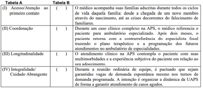
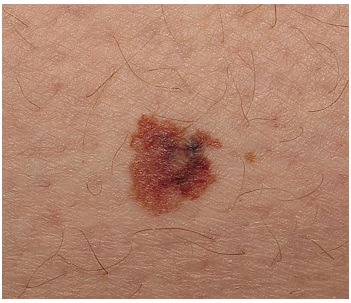
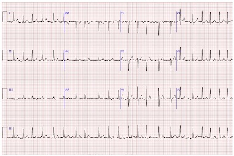
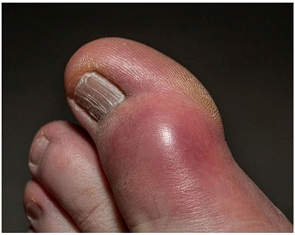
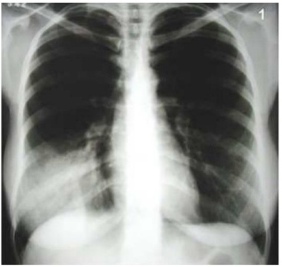

Questão 1 · Rastreamento nas pacientes de alto risco · 4000163732Paciente, 35 anos, realizou biopsia mamária de nódulo compatível com hiperplasia ductal atípica. Não sabe referir história familiar pois foi adotada na infância. Procura ginecologista para realizar exames para prevenção do câncer de mama. Assinale a assertiva correta quanto à classificação de risco da paciente e adequada estratégia de rastreamento com as recomendações do Colégio Brasileiro de Radiologia e da Federação Brasileira de Ginecologia e Obstetrícia (Febrasgo).
A Risco intermediário: realizar mamografia anual + Ultrassonografia (USG) pode ser solicitada de maneira individualizada.
B Risco intermediário: realizar mamografia anual + Ultrassonografia e ressonância magnética complementares.
C Alto Risco: realizar mamografia anual + Ultrassonografia e ressonância magnética complementares.
D Alto Risco: Mamografia e ressonância magnética anuais a partir dos 30 anos.
Questão 2 · Tratamento · Ginecologia · 4000163731Mulher, 85 anos, com queixa de bola na vagina. Ao exame físico, apresenta prolapso uterino estadio 4. Paciente hipertensa e diabética em uso de insulina e não deseja procedimento cirúrgico. Qual melhor opção terapêutica?
A Pessário vaginal.
B Histerectomia total vaginal.
C Fisioterapia do assoalho pélvico.
D Colpoplastia anterior e posterior.
Questão 3 · Ginecologia · Tratamento · 4000163730Mulher, 45 anos, obesa, com queixa de perda de urina ao tossir, espirrar e ao caminhar. Realizou estudo urodinâmico que observou detrusor estável e pressão de perda à manobra de Valsalva de 42cmH2O. Qual a melhor opção terapêutica para tratamento da incontinência urinária?
A Agente de preenchimento uretral.
B Colposuspensão retropúbica.
C Sling retropúbico.
D Colpoperineoplastia.
Questão 4 · Etiologia · Diagnóstico dif erencial · 4000163729Mulher, multípara de 65 anos, com menopausa aos 50 anos, assintomática desde então. Sem comorbidades. Realiza exames ginecológicos regulares sem alterações. Apresenta sangramento uterino anormal há 3 dias em pequena quantidade de aspecto descrito como em borra de café. Nega dores abdominais ou quaisquer outras queixas. Assinale a assertiva correta quanto ao diagnóstico mais provável para este caso de sangramento uterino anormal.
A Neoplasia intraepitelial endometrial.
B Neoplasia intraepitelial cervical.
C Adenocarcinoma de endométrio.
D Atrofia endometrial.
Questão 5 · Classif icação FIGO · Adenomiose · 4000163728Mulher, 35 anos, G3P2A0, três cesáreas prévias, com história de sangramento uterino de 9 dias de duração, com intervalo cíclico mensal regular e de grande volume que extravasa do absorvente, desde última cesárea ha8 anos. Associado quadro de cólicas incapacitantes em baixo ventre, progressiva, que intensi ca nos primeiros 3 dias de uxo necessitando de AINEs. Refere anemia crônica e fraqueza. Realizou ultrassonogra a pélvica transvaginal que excluiu a possibilidade de leiomiomas e mostrou um útero aparentemente normal. Assinale a assertiva correta que corresponde à causa mais provável do sangramento uterino anormal.
A Endometrite.
B Adenomiose.
C Coagulopatia.
D Anovulação crônica.
Revisar: possível letra faltando em enunciado
Questão 6 · Endometriose · 4000163727Paciente 26 anos, nuligesta, refere ciclos menstruais regulares com dismenorreia, dor pélvica crônica progressiva desde menarca, além de dispareunia. Deseja engravidar mas está há dois anos sem métodos contraceptivos e não consegue. Realizou espermograma do companheiro que foi normal, Ao exame físico, encontra-se dor e espessamento bilateral em ligamentos úterossacrais e nodularidade dolorosa em fundo de saco vaginal. Fez ultrassonogra a pélvica transvaginal compatível com ovários aumentados de volume bilaterais, imóveis, centralizados e posteriorizados. Qual a principal hipótese diagnóstica mais provável para o fator causal dessa infertilidade primária.
A Endometriose profunda.
B Falência ovaríana prematura.
C Sequela de Doença Inflamatória pélvica.
D Anovulação crônica por Síndrome de Ovários Policísticos.
Questão 7 · Gestação ectópica · 4000163726Mulher de 30 anos, nuligesta, comparece ao setor de emergência do hospital com quadro de atraso menstrual de dois meses, dor abdominal difusa, tontura e sangramento vaginal discreto. Ao exame, nota-se palidez cutâneo-mucosa, sudorese, PA: 90 x 50 mmHg, FC: 140bpm, abdome doloroso à descompressão brusca, principalmente em fossa ilíaca direita. Toque vaginal com abaulamento e dor em fundo de saco posterior. Realizou ultrassonogra a pélvica transvaginal não visualiza imagem de saco gestacional intrauterino e vê imagem anexial sugestiva de prenhez ectópica íntegra < 4 cm. Dosagem de ß-hCG = 2.500 UI/L. Hemogobina=7,0mg/dL e Hematócrito= 25%. Assinale a assertiva correta quanto à conduta mais adequada deste caso.
A Laparoscopia ginecológica de urgência.
B Metotrexate 50 mg / m2 intramuscular dose única.
C Dosagens seriadas de ß-hCG sérico quantitativo e manter paciente internada.
D Metotrexate 1,0mg/Kg intramuscular (dia 1) + Ácido folínico 0,1mg/Kg via oral (dia 2).
Questão 8 · Vaginose bacteriana · Ginecologia · Mudanças da f lora vaginal · 4000163725Mulher 30 anos, solteira, procura atendimento devido a queixa de conteúdo vaginal abundante com odor fétido há cerca de 5 dias. Relata novo parceiro há cerca de 2 meses, em uso de contraceptivo combinado oral. Nega outras queixas clínicas, como alterações menstruais ou disúria. Ao exame: Vulva sem alterações. Ao exame especular: conteúdo fluido algo bolhoso em moderada quantidade, de odor fétido. Colpite ausente. Colo com muco opaco, sem alterações. Teste de pH= 4,8 Resultado de bacterioscopia por Gram: Células escamosas +++ Leucócitos ++ Microbiota constituída por: Bacilos curtos Gram-negativos, cocobacilos Gram variáveis e cocos Gram-positivos. Escore de Nugent= 8. Qual tratamento é mais adequado nesta situação?
A Azitromicina 1g via oral em dose única.
B Metronidazol 500mg, via oral, de 12/12 horas por 7 dias.
C Fluconazol 150 mg via oral em dose única e Metronidazol gel vaginal 7 dias.
D Ceftriaxona 500mg intramuscular, Azitromicina 1g em dose única e Metronidazol gel vaginal 7 dias.
Questão 9 · Contraindicações · 4000163724Mulher de 35 anos, casada, dois lhos de parto normal, procura atendimento na Unidade Básica de Saúde com desejo de reiniciar contraceptivo oral. Refere enxaqueca com aura, hipertensão em uso de medicação. Nega tabagismo. Informa ter ciclos menstruais regulares e nega outras queixas ou comorbidades. Ao exame: Obesa (IMC=30), PA: 130x90mmHg. Qual a melhor opção contraceptiva para esse caso?
A Anel vaginal.
B Adesivo transdérmico.
C Dispositivo Intrauterino (DIU).
D Contraceptivo oral combinado.
Questão 10 · Roteiro diagnóstico · 4000163723Menina de 16 anos vem ao posto de saúde com sua mãe com queixa de nunca ter menstruado. Refere ter tido telarca e pubarca aos 10 anos, nega dor. Ao exame físico, mamas Tunner IV, abdome, sem massas palpáveis ou pontos dolorosos, vulva com pili cação ginecoide, Tunner IV, com clítoris, pequenos e grandes lábios normais, porém o introito vaginal não permite a passagem de um cotonete. Qual o melhor exame para auxiliar no diagnóstico diferencial?
A Ultrassom pélvico.
B Dosagem sérica de FSH e LH.
C Dosagem sérica de Prolactina e TSH.
D Dosagem sérica de estrogênio e progesterona.
Questão 11 · Hemorragias pós parto HPP e rotura uterina · Assistência ao puerperio · Obstetrícia · 4000163722MSS, 38 anos, G5P4A0, IG 40 semanas, apresentando polidrâmnio é admitida no centro obstétrico com feto cefálico, 3 contrações 50 segundos em 10 minutos, colo com 7 cm dilatação, bolsa das águas íntegras. Com relação às medidas de prevenção da hemorragia pós-parto (HPP), nesta paciente, qual a afirmativa correta?
A Acesso venoso calibroso, reserva de sangue e ocitocina 10 unidades intramuscular, imediatamente após o nascimento.
B Amniotomia , metilergometrina 0,2 mg intramuscular, imediatamente após o nascimento, seguida de tração controlada do cordão umbilical.
C Expressão do fundo uterino, associada à tração controlada do cordão umbilical, ácido tranexâmico 1,0 g endovenoso e reserva de concentrado de hemáceas.
D Obtenção de acesso venoso calibroso, elevação dos membros inferiores, monitorização dos sinais vitais e tônus uterino a cada 15 minutos, durante a primeira hora pós-parto.
Questão 12 · Seguimento pós molar · Intercorrências obstétricas obstetrícia patológica · Diagnóstico · 4000163721Paciente de 22 anos, G1P0A1, comparece ao seu plantão em emergência obstétrica referindo sangramento transvaginal persistente desde curetagem uterina realizada há 45 dias por abortamento espontâneo. Ao exame, você percebe colo amolecido com orifício interno entreaberto. Ela traz exames realizados hoje: beta-hCG quantitativo de 12.000 mIU/ml e ultrassom transvaginal mostrando útero de 150cm³, endométrio de 4mm, imagem heterogênea de limites inde nidos em parede miometrial anterior, apresentando uxo vascular de baixa resistência ao doppler. Sua principal hipótese diagnóstica e conduta são:
A Mola hidatiforme parcial. Realizar aspiração manual intrauterina.
B Neoplasia trofoblástica gestacional (NTG). Realizar histerectomia.
C Mola hidatiforme completa. Realizar aspiração manual intrauterina.
D Neoplasia trofoblástica gestacional (NTG). Encaminhar para quimioterapia.
Questão 13 · Covid na gestação · Obstetrícia · 4000163720Primigesta, de 27 anos, comparece à emergência de maternidade em início da fase ativa do trabalho de parto. Apresenta RT-PCR para Covid-19 positivo do dia anterior. Informa quadro gripal há 6 dias, com adinamia, odinofagia, anosmia e febre baixa. Nega dispneia. Ao exame, saturação de oxigênio de 98%. Paciente solicita direito a acompanhante e apresenta plano de parto que deseja seguir. Suas orientações, levando em consideração a pandemia do Covid-19, são:
A A Covid-19 é indicação para alterar a via de parto, sendo o parto cesáreo a via de parto mais indicada nesse caso. Durante a realização da cesárea, o plano de parto da paciente deve ser seguido, com direito a acompanhante de sua escolha, bem como clampeamento oportuno do cordão umbilical.
B Não só a gestante, mas também seu recém-nascido e seu acompanhante deverão ser isolados, de preferência em um quarto de alojamento conjunto. Quando sozinhos no alojamento conjunto com o recém-nascido, o uso da máscara não se faz necessário pela puérpera e pelo seu acompanhante.
C Privilegiar o aleitamento natural, com liberação da prática da amamentação, desde que medidas que garantam a proteção, tanto da mãe quanto do recém-nascido, sejam seguidas. Puérperas com dispneia, podem retirar a máscara enquanto amamentam para conforto materno e melhora da saturação de oxigênio.
D Priorizar o parto vaginal, por ser mais seguro a gestantes com Covid-19. Deve-se explicar à paciente e aos seus familiares sobre risco de contaminação e orientar que o isolamento é a medida mais segura. No caso de o acompanhante permanecer, não deve circular nas demais áreas do hospital e precisa usar máscara quando o fizer.
Questão 14 · Dependência de Álcool · Doenças associadas à gestação · Maconha · 4000163719A.B.S., 16 anos, G1P0A0, moradora de rua, usuária de álcool, tabaco, maconha e crack é trazida ao pré-natal de adolescente pelo serviço social, para acompanhamento. Identi que a melhor opção acerca dos efeitos do uso de drogas durante a gestação e melhor maneira de abordagem dos sintomas de abstinência.
A O uso de álcool durante a gestação está associado à maior ocorrência de parto prematuro, abortamento e natimortos. Uma abordagem multidisciplinar, com enfoque no tratamento psicossocial e comportamental, está indicada no intuito de cessar o uso durante o pré-natal, não sendo necessária a introdução de tratamento medicamentoso.
B O uso de crack durante a gestação está associado à maior ocorrência de parto prematuro, abortamento e fetos grandes para a idade gestacional. Uma abordagem multidisciplinar, com enfoque no tratamento psicossocial e comportamental, está indicada, sendo necessário o início de tratamento medicamentoso no intuito de cessar o uso durante a gravidez.
C O uso de tabaco durante a gestação está associado à maior ocorrência de baixo peso ao nascimento, parto prematuro, descolamento prematuro de placenta, abortamento, natimortos e malformações congênitas. Uma abordagem multidisciplinar, com enfoque no tratamento psicossocial e comportamental, está indicada no intuito de diminuir ou cessar o uso durante o pré-natal.
D O uso de maconha durante a gestação está associado à maior ocorrência de anemia durante a gestação, porém não demonstra interferência na prematuridade e no peso fetal, ao nascimento. Uma abordagem multidisciplinar, com enfoque no tratamento psicossocial e comportamental está indicada no intuito de cessar o uso durante o pré-natal, não sendo necessária a introdução de tratamento medicamentoso.
Questão 15 · Gestação múltipla gestação gemelar · 4000163718Gestante de 34 anos, G1P0A0, realizou fertilização in vitro, comparece à segunda consulta de pré-natal com ultrassom revelando gestação gemelar dicoriônica no curso da 8ª semana. Qual das a rmativas não é verdadeira em relação a esta gestação?
A 70-75% das gestações gemelares são dizigóticas, sendo estas dicoriônicas e diamnióticas em 100% dos casos.
B O seguimento pré-natal desta gestação deve ser realizado de forma mensal, até a 28ª semana, a cada 2-3 semanas a partir da 28ª semana e, semanal, a partir da 36ª semana.
C Após a prematuridade, a complicação mais frequente da gravidez gemelar dicoriônica é a síndrome da transfusão feto fetal (STFF), sendo importante causa de morbimortalidade perinatal.
D O rastreamento ultrassonográfico da gestação gemelar dicoriônica, se faz entre a 11ª e 14ª semana para datação e rastreamento de cromossomopatias e entre a 20ª e 22ª semana para avaliação detalhada da anatomia fetal e comprimento do colo. Após a 24ª semana, realiza-se a cada 30 dias para avaliar o crescimento, o líquido amniótico e doppler fetal.
Questão 16 · Trabalho de parto prematuro TPP · 4000163717A prematuridade permanece, nos dias atuais, como sério problema perinatal, sendo responsável por cerca de 75% de toda a morbidade e mortalidade neonatais (Blencowe et al., 2013; ACOG, 2016). Com relação ao Trabalho de Parto Prematuro, é correto afirmar:
A O nifedipino é o fármaco de primeira escolha para inibir o parto pré-termo, por apresentar as seguintes vantagens: via oral de administração, poucos efeitos colaterais e eficácia em reduzir as complicações neonatais. A indometacina também pode ser utilizada, especialmente após a 32ª semana.
B O uso de tocolítico visa prolongar a gestação por 48 h enquanto se aguardam os efeitos benéficos do corticoide e se transfere a paciente para maternidade de nível terciário. A manutenção do tratamento tocolítico acima de 48 h, também é eficaz em prevenir o parto prematuro e melhorar o prognóstico neonatal.
C O sulfato de magnésio (MgSO) utilizado para a neuroproteção fetal está indicado na gestação entre 23+0 e 31+6 semanas quando há risco de parto nos próximos 7 dias. A profilaxia antibiótica intraparto (PAI) contra estreptococo do grupo B (GBS) é obrigatória, a menos que a cultura vaginorretal tenha sido negativa nas últimas 5 semanas.
D O corticoide é capaz não só de reduzir a incidência de Síndrome da Angústia Respiratória (SAR) como também de outras complicações no recém-nascido, tais como hemorragia intraventricular, retinopatia da prematuridade, enterocolite necrosante, persistência do canal arterial e, o que é mais importante, a taxa de mortalidade neonatal. O repouso no leito e a hidratação de nada servem para a prevenção do parto prematuro.
Questão 17 · Métodos de alivio da dor no parto · 4000163716Paciente, 23 anos, G1P0A0, em seguimento pré-natal na Unidade Básica de Saúde, mostra-se preocupada acerca da dor durante o trabalho de parto e as formas mais adequadas de seu alívio e aborda seu prenatalista sobre a maneira mais indicada de se conduzir diante desta situação. Identifique a melhor orientação a ser dada.
A A pré-hidratação, acesso venoso periférico e manutenção de decúbito lateral são obrigatórios durante todo o tempo em que a paciente estiver sob analgesia peridural.
B A solicitação materna por analgesia farmacológica de parto não compreende indicação suficiente para sua realização. Avaliação e prescrição conjunta, de obstetra e anestesista, deve ser sempre realizada e todos os métodos não farmacológicos devem ter sido esgotados previamente.
C Os métodos não farmacológicos de alívio da dor, tais como imersão em água, áudio-analgesia e aromaterapia, devem ser oferecidos à mulher antes da utilização de métodos farmacológicos, pois constituem intervenções não invasivas e sem descrição de efeitos colaterais.
D Os métodos não farmacológicos de alívio da dor tais como imersão em água, áudio-analgesia, aromaterapia, injeção de água estéril, estimulação elétrica transcutânea e acupuntura, devem ser sempre oferecidos à parturiente, já que se tratam de intervenções não invasivas e sem descrição de efeitos colaterais.
Questão 18 · Distúrbios hipertensivos na gestação DHEG · 4000163715A residente B.M.W. chega ao plantão obstétrico em hospital terciário recebendo de seu colega médico, em passagem de plantão, a história da paciente N.A.S.A., 16 anos, primigesta com idade gestacional de 34 semanas, apresentando quadro de elevação dos níveis pressóricos, PA: 160x100mmhg, Auscuta Fetal com BCF: 180bpm, dinâmica uterina ausente, em uso de sonda vesical de demora, sem apresentar diurese nas últimas 3 horas. No momento da passagem do caso, a paciente encontrava-se em uso da 2ª fase de sulfato de magnésio (MgSO4), iniciado no momento de sua internação, motivada pelo quadro descrito em associação com cefaleia occiptal, vômitos persistentes e alterações visuais (escotomas e amaurose). A conduta adequada a ser tomada é:
A Manter a infusão de sulfato de Magnésio 50%, visando prevenir crises convulsivas, AVC e edema agudo de pulmão.
B Administrar hidralazina 5 mg, EV, para tratar o pico pressórico e betametazona 12 mg, IM, para promoção da maturação pulmonar fetal.
C Confirmar a vitalidade fetal pela ultrassonografia obstétrica com doppler e resolver a gestação via vaginal, através de indução com misoprostol.
D Administrar nifedipina 20 mg, via oral, para tratar pico pressórico e solicitar hematócrito, hemoglobina, contagem de plaquetas, creatinina, TGO, LDH, TP, TTPa, fibrinogênio e relação proteína creatinina, para avaliar lesões de órgãos alvo.
Questão 19 · Diabetes na gestação DMG · 4000163714Os Centers for Disease Control and Prevention (CDC) de nem cuidado pré-concepcional como “um conjunto de intervenções que visam identi car e modi car riscos biomédicos, comportamentais e sociais para a saúde ou o resultado da gestac pré-natal destacam-se o rastreio para a Diabetes Mellitus e a profilaxia desta patologia. Desta maneira, é correto afirmar:
A Estabelecer o diagnóstico do Diabetes Mellitus Gestacional (DMG) oferece a oportunidade de melhorar o prognóstico da gravidez, mas não reduz os fatores de risco associados ao desenvolvimento subsequente do diabetes tipo 2.
B O diabetes pré-gestacional merece ser identificado na 1ª consulta pré-natal, pois compromete a mãe e o feto. Mulheres diabéticas que desejam engravidar, devem ser avaliadas apenas se apresentarem história de mal passado obstétrico.
C Grávidas de alto risco para diabetes que apresentam no 1º trimestre valor da HbA1c ≥ 6% têm reduzido valor preditivo para Diabetes Mellitus Gestacional. Mulheres com diabetes tipo 1 que pretendam engravidar devem passar por avaliação da tireoide pela determinação do TSH e do anticorpo anti-tireoperoxidase (anti-TPO).
D Toda mulher com Diabetes Mellitus Gestacional (DMG) deve ser rastreada entre 6 e 12 semanas após o parto pelo TOTG-75 g de 2h. Diabéticas que planejam a gravidez, devem ser aconselhadas a utilizar suplementação com ácido fólico 3 meses antes da concepção e por 12 semanas depois, para prevenir os defeitos do tubo neural (DTN).
Questão 20 · Modif icações f isiológicas da gestação · 4000163713Gestante, de 29 anos, com 34 semanas de idade gestacional, comparece à emergência preocupada por achar estar com Covid-19, referindo adinamia, congestão nasal e dispneia leve, principalmente ao deitar. Seu exame mostrou saturação de oxigênio de 96% em ar ambiente, frequência respiratória de 23 irpm, temperatura axilar de 37,2 °C e ausculta pulmonar com murmúrios vesiculares diminuídos nas bases bilateralmente. Marque o item que contém sua hipótese diagnóstica e conduta.
A Síndrome gripal. Internamento hospitalar, monitorização e tratamento clínico até resultado de exames confirmatórios de Covid-19.
B Gestação fisiológica. Orientações a respeito de uso de máscara, distanciamento social e sintomas de alarme para doença respiratória.
C Síndrome gripal. Coleta de secreções respiratórias para PCR-RT de covid-19 e liberação para isolamento em domicílio usando oseltamivir.
D Síndrome respiratória aguda grave. Internamento para monitorização e interrupção da gestação por cesárea, após corticoide para maturação pulmonar.
Questão 21 · Sangramento uterino anormal · 4000163712Considere o caso clínico abaixo e os personagens nele ilustrados, para responder. Após ser aprovado e ingressar no Programa de Residência Médica em Medicina de Família e Comunidade, você é direcionado para uma Unidade de Atenção Primária à Saúde (UAPS) para ser recebido pelo médico preceptor da Unidade. Em sua primeira participação de reunião de equipe, uma das agentes comunitárias de saúde (ACS) da equipe do médico preceptor traz o relato de uma gestante de sua microárea que não procurou a Unidade de Saúde para começar o pré-natal. A gestante era Vanessa e ela era antiga conhecida da equipe, porque seu nado pai, Seu Odair, fora uma liderança comunitária e era muito querido por todos. Vanessa tinha a primeira consulta de pré-natal agendada para o primeiro horário depois da reunião de equipe. Dr. Marcos Júlio, seu preceptor, relata que Vanessa nunca teve boa relação com os pais e saiu de casa cedo, passando a morar, aos 14 anos, na casa de Ubiratan, seu primeiro parceiro. Após alguns anos morando juntos, Vanessa engravidou e chegou a ser acompanhada pela UAPS no pré-natal, mas teve perda gravídica com aproximadamente 12 semanas de seguimento. Durante esse acompanhamento pré-natal, a equipe cou ciente de que Vanessa vivia em contexto de violência doméstica, mas continuava vivendo com Ubiratan, porque não aceitava voltar para a casa dos pais. Por volta de seus 24 anos, Vanessa teve episódio de hemiplegia desproporcional em dimídio esquerdo, desvio de rima labial e disartria, enquanto trabalhava em uma casa como diarista. Foi levada à urgência e hospitalizada. Durante hospitalização, confirmou-se um infarto cerebral. A família de Vanessa possui histórico de AVCs em idades precoces: Vanusa apresentou episódio de AVC durante uma de suas gestações e dona Benzarina teria apresentado o primeiro AVC antes da menopausa. Segundo a Assistente Social do hospital em que Vanessa cou internada por quase dois meses, Ubiratan nunca teria realizado uma visita, mas Edberto, um ex-namorado, foi companhia assídua. Após a alta hospitalar, Vanessa descobriu que Ubiratan estava vivendo com outra mulher e se mudou para casa de Edberto, que a acolheu, a despeito da não-aceitação do pai de Edberto, Seu Eduardo. Depois de seis anos morando juntos, Vanessa engravidou novamente, mas não procurou a UAPS. A ACS fazia visitas domiciliares na mesma rua em que Edberto e Vanessa moram, quando viu Vanessa, já com barriga gravídica, varrendo a calçada. Após breve conversa, a ACS agenda atendimento para Vanessa na UAPS. Após o atendimento de dona Benzarina, Vanusa pergunta se voce ser a cuidadora principal de sua mãe, quase não podendo vir à UAPS, e pela própria história clínica de AVC precoce de Vanusa, você acolhe a solicitação dela. Vanusa vem com queixa de sangramento regular, mas intenso, desde menarca, que se intensi cou nos últimos 10 anos e passou a ser irregular. Consultando o prontuário, você vê que a USG pélvica transvaginal realizada há seis meses não evidenciou nenhuma alteração estrutural. Você realiza exame ginecológico, sem evidenciar nenhuma lesão vaginal e sem nenhuma alteração em exame especular. Qual opção terapêutica seria adequada para a queixa de sangramento uterino de Vanusa?
A Anticoncepcional oral combinado.
B Dispositivo intrauterino (DIU) de cobre.
C Dispositivo intrauterino com sistema de liberação prolongada de levonorgestrel.
D Encaminhamento para ambulatório de ginecologia para programação de histerectomia eletiva.
Revisar: possível letra faltando em enunciado
Questão 22 · Demências · Acidentes Vasculares Cerebrais AVC · Demência Vascular · 4000163711Considere o caso clínico abaixo e os personagens nele ilustrados, para responder. Após ser aprovado e ingressar no Programa de Residência Médica em Medicina de Família e Comunidade, você é direcionado para uma Unidade de Atenção Primária à Saúde (UAPS) para ser recebido pelo médico preceptor da Unidade. Em sua primeira participação de reunião de equipe, uma das agentes comunitárias de saúde (ACS) da equipe do médico preceptor traz o relato de uma gestante de sua microárea que não procurou a Unidade de Saúde para começar o pré-natal. A gestante era Vanessa e ela era antiga conhecida da equipe, porque seu nado pai, Seu Odair, fora uma liderança comunitária e era muito querido por todos. Vanessa tinha a primeira consulta de pré-natal agendada para o primeiro horário depois da reunião de equipe. Dr. Marcos Júlio, seu preceptor, relata que Vanessa nunca teve boa relação com os pais e saiu de casa cedo, passando a morar, aos 14 anos, na casa de Ubiratan, seu primeiro parceiro. Após alguns anos morando juntos, Vanessa engravidou e chegou a ser acompanhada pela UAPS no pré-natal, mas teve perda gravídica com aproximadamente 12 semanas de seguimento. Durante esse acompanhamento pré-natal, a equipe cou ciente de que Vanessa vivia em contexto de violência doméstica, mas continuava vivendo com Ubiratan, porque não aceitava voltar para a casa dos pais. Por volta de seus 24 anos, Vanessa teve episódio de hemiplegia desproporcional em dimídio esquerdo, desvio de rima labial e disartria, enquanto trabalhava em uma casa como diarista. Foi levada à urgência e hospitalizada. Durante hospitalização, confirmou-se um infarto cerebral. A família de Vanessa possui histórico de AVCs em idades precoces: Vanusa apresentou episódio de AVC durante uma de suas gestações e dona Benzarina teria apresentado o primeiro AVC antes da menopausa. Segundo a Assistente Social do hospital em que Vanessa cou internada por quase dois meses, Ubiratan nunca teria realizado uma visita, mas Edberto, um ex-namorado, foi companhia assídua. Após a alta hospitalar, Vanessa descobriu que Ubiratan estava vivendo com outra mulher e se mudou para casa de Edberto, que a acolheu, a despeito da não-aceitação do pai de Edberto, Seu Eduardo. Depois de seis anos morando juntos, Vanessa engravidou novamente, mas não procurou a UAPS. A ACS fazia visitas domiciliares na mesma rua em que Edberto e Vanessa moram, quando viu Vanessa, já com barriga gravídica, varrendo a calçada. Após breve conversa, a ACS agenda atendimento para Vanessa na UAPS. Em um turno de demanda programada na Unidade, Vanusa, irmã de Vanessa, traz dona Benzarina para atendimento. A consulta é para mostrar exames solicitados há seis meses. O registro no prontuário traz “si predominância de disfunc de marcha”. A ressonância nuclear magnética de crânio evidencia acometimento extenso de substância branca, no giro do cíngulo, no lobo temporal medial e no tálamo. Assinale a alternativa com o diagnóstico mais provável.
A Demência vascular.
B Demência de Alzheimer.
C Demência frontotemporal (DFT).
D Demência por corpúsculo de Lewy.
Revisar: possível letra faltando em enunciado
Questão 23 · Tratamento · 4000163710Considere o caso clínico abaixo e os personagens nele ilustrados, para responder. Após ser aprovado e ingressar no Programa de Residência Médica em Medicina de Família e Comunidade, você é direcionado para uma Unidade de Atenção Primária à Saúde (UAPS) para ser recebido pelo médico preceptor da Unidade. Em sua primeira participação de reunião de equipe, uma das agentes comunitárias de saúde (ACS) da equipe do médico preceptor traz o relato de uma gestante de sua microárea que não procurou a Unidade de Saúde para começar o pré-natal. A gestante era Vanessa e ela era antiga conhecida da equipe, porque seu nado pai, Seu Odair, fora uma liderança comunitária e era muito querido por todos. Vanessa tinha a primeira consulta de pré-natal agendada para o primeiro horário depois da reunião de equipe. Dr. Marcos Júlio, seu preceptor, relata que Vanessa nunca teve boa relação com os pais e saiu de casa cedo, passando a morar, aos 14 anos, na casa de Ubiratan, seu primeiro parceiro. Após alguns anos morando juntos, Vanessa engravidou e chegou a ser acompanhada pela UAPS no pré-natal, mas teve perda gravídica com aproximadamente 12 semanas de seguimento. Durante esse acompanhamento pré-natal, a equipe cou ciente de que Vanessa vivia em contexto de violência doméstica, mas continuava vivendo com Ubiratan, porque não aceitava voltar para a casa dos pais. Por volta de seus 24 anos, Vanessa teve episódio de hemiplegia desproporcional em dimídio esquerdo, desvio de rima labial e disartria, enquanto trabalhava em uma casa como diarista. Foi levada à urgência e hospitalizada. Durante hospitalização, confirmou-se um infarto cerebral. A família de Vanessa possui histórico de AVCs em idades precoces: Vanusa apresentou episódio de AVC durante uma de suas gestações e dona Benzarina teria apresentado o primeiro AVC antes da menopausa. Segundo a Assistente Social do hospital em que Vanessa cou internada por quase dois meses, Ubiratan nunca teria realizado uma visita, mas Edberto, um ex-namorado, foi companhia assídua. Após a alta hospitalar, Vanessa descobriu que Ubiratan estava vivendo com outra mulher e se mudou para casa de Edberto, que a acolheu, a despeito da não-aceitação do pai de Edberto, Seu Eduardo. Depois de seis anos morando juntos, Vanessa engravidou novamente, mas não procurou a UAPS. A ACS fazia visitas domiciliares na mesma rua em que Edberto e Vanessa moram, quando viu Vanessa, já com barriga gravídica, varrendo a calçada. Após breve conversa, a ACS agenda atendimento para Vanessa na UAPS. Ainda na consulta de Edberto, foi verificada glicemia capilar em jejum de 158 mg/dl, e o mesmo questiona o significado clínico desse achado. Corretamente, você responde que a glicemia capilar ainda não está validada para diagnóstico, mas a glicemia capilar alterada sugere alteração no exame de glicemia sérica plasmática. Vendo que não constam exames prévios no prontuário de Edberto, você, então, solicita exames laboratoriais para avaliação metabólica e agenda o retorno. Após um mês, Edberto retorna com os exames complementares, que trazem glicemia de jejum de 160 mg/dl, HbA1c = 8,0%, Colesterol Total = 270 mg/dl, HDL = 30 mg/dl, Triglicerídeos séricos = 300 mg/dl. Não havia alterações em eletrólitos, nem alterações sugestivas de nefropatia diabética ou doença coronariana isquêmica. Assinale a alternativa que contempla a opção terapêutica adequada quanto à hiperglicemia.
A Orientar mudanças de estilo de vida (MEVs) e retorno em seis meses com os mesmos exames laboratoriais para nova avaliação.
B Introduzir Metformina associada a MEVs. A associação de um segundo antidiabético pode ser considerada e pactuada individualmente.
C Iniciar a Insulinoterapia plena para o controle glicêmico precoce de imediato. Depois, descalonar para terapia oral associada a MEVs.
D Iniciar terapia farmacológica em esquema de Insulinoterapia Basal Plus: (Insulinoterapia Basal + Insulinoterapia Prandial + Hipoglicemiantes orais).
Revisar: possível letra faltando em enunciado
Questão 24 · Diagnóstico e classif icação · 4000163709Considere o caso clínico abaixo e os personagens nele ilustrados, para responder. Após ser aprovado e ingressar no Programa de Residência Médica em Medicina de Família e Comunidade, você é direcionado para uma Unidade de Atenção Primária à Saúde (UAPS) para ser recebido pelo médico preceptor da Unidade. Em sua primeira participação de reunião de equipe, uma das agentes comunitárias de saúde (ACS) da equipe do médico preceptor traz o relato de uma gestante de sua microárea que não procurou a Unidade de Saúde para começar o pré-natal. A gestante era Vanessa e ela era antiga conhecida da equipe, porque seu nado pai, Seu Odair, fora uma liderança comunitária e era muito querido por todos. Vanessa tinha a primeira consulta de pré-natal agendada para o primeiro horário depois da reunião de equipe. Dr. Marcos Júlio, seu preceptor, relata que Vanessa nunca teve boa relação com os pais e saiu de casa cedo, passando a morar, aos 14 anos, na casa de Ubiratan, seu primeiro parceiro. Após alguns anos morando juntos, Vanessa engravidou e chegou a ser acompanhada pela UAPS no pré-natal, mas teve perda gravídica com aproximadamente 12 semanas de seguimento. Durante esse acompanhamento pré-natal, a equipe cou ciente de que Vanessa vivia em contexto de violência doméstica, mas continuava vivendo com Ubiratan, porque não aceitava voltar para a casa dos pais. Por volta de seus 24 anos, Vanessa teve episódio de hemiplegia desproporcional em dimídio esquerdo, desvio de rima labial e disartria, enquanto trabalhava em uma casa como diarista. Foi levada à urgência e hospitalizada. Durante hospitalização, confirmou-se um infarto cerebral. A família de Vanessa possui histórico de AVCs em idades precoces: Vanusa apresentou episódio de AVC durante uma de suas gestações e dona Benzarina teria apresentado o primeiro AVC antes da menopausa. Segundo a Assistente Social do hospital em que Vanessa cou internada por quase dois meses, Ubiratan nunca teria realizado uma visita, mas Edberto, um ex-namorado, foi companhia assídua. Após a alta hospitalar, Vanessa descobriu que Ubiratan estava vivendo com outra mulher e se mudou para casa de Edberto, que a acolheu, a despeito da não-aceitação do pai de Edberto, Seu Eduardo. Depois de seis anos morando juntos, Vanessa engravidou novamente, mas não procurou a UAPS. A ACS fazia visitas domiciliares na mesma rua em que Edberto e Vanessa moram, quando viu Vanessa, já com barriga gravídica, varrendo a calçada. Após breve conversa, a ACS agenda atendimento para Vanessa na UAPS. Durante o exame físico de Edberto, você aferiu PA = 162x114mmHg, IMC = 38kg/m², circunferência abdominal = 110cm e glicemia capilar em jejum = 158mg/dl. A ausculta cardíaca evidenciou frequência cardíaca de repouso de 120bpm, ictus deslocado para o 6º espaço intercostal e com caráter propulsivo. Edberto cou surpreso com o valor de sua pressão arterial, referindo que, apesar de não lembrar quando fora a última vez que teve a pressão arterial aferida, nunca havia chegado a esse nível pressórico. Ele, então, pergunta qual significado clínico desse valor. Assinale a alternativa com a conduta correta.
A Orientar que essa aferição isolada não implica diagnóstico de HAS, mas, em próximo atendimento, caso nível pressórico esteja maior que 140x90, será dado o diagnóstico de HAS.
B Orientar que essa aferição isolada não implica diagnóstico de HAS. Solicitar diário pressórico (MRPA) para diagnóstico de HAS em próximo atendimento.
C Diagnosticar e comunicar evento de Emergência hipertensiva e encaminhar a serviço de Urgência e Emergência para controle parenteral.
D Informar que mesmo com somente essa aferição isolada, considerando dados clínicos, o paciente tem diagnóstico de HAS em medição única.
Revisar: possível letra faltando em enunciado
Questão 25 · Níveis de Prevenção e outros conceitos associados · 4000163708Considere o caso clínico abaixo e os personagens nele ilustrados, para responder. Após ser aprovado e ingressar no Programa de Residência Médica em Medicina de Família e Comunidade, você é direcionado para uma Unidade de Atenção Primária à Saúde (UAPS) para ser recebido pelo médico preceptor da Unidade. Em sua primeira participação de reunião de equipe, uma das agentes comunitárias de saúde (ACS) da equipe do médico preceptor traz o relato de uma gestante de sua microárea que não procurou a Unidade de Saúde para começar o pré-natal. A gestante era Vanessa e ela era antiga conhecida da equipe, porque seu nado pai, Seu Odair, fora uma liderança comunitária e era muito querido por todos. Vanessa tinha a primeira consulta de pré-natal agendada para o primeiro horário depois da reunião de equipe. Dr. Marcos Júlio, seu preceptor, relata que Vanessa nunca teve boa relação com os pais e saiu de casa cedo, passando a morar, aos 14 anos, na casa de Ubiratan, seu primeiro parceiro. Após alguns anos morando juntos, Vanessa engravidou e chegou a ser acompanhada pela UAPS no pré-natal, mas teve perda gravídica com aproximadamente 12 semanas de seguimento. Durante esse acompanhamento pré-natal, a equipe cou ciente de que Vanessa vivia em contexto de violência doméstica, mas continuava vivendo com Ubiratan, porque não aceitava voltar para a casa dos pais. Por volta de seus 24 anos, Vanessa teve episódio de hemiplegia desproporcional em dimídio esquerdo, desvio de rima labial e disartria, enquanto trabalhava em uma casa como diarista. Foi levada à urgência e hospitalizada. Durante hospitalização, confirmou-se um infarto cerebral. A família de Vanessa possui histórico de AVCs em idades precoces: Vanusa apresentou episódio de AVC durante uma de suas gestações e dona Benzarina teria apresentado o primeiro AVC antes da menopausa. Segundo a Assistente Social do hospital em que Vanessa cou internada por quase dois meses, Ubiratan nunca teria realizado uma visita, mas Edberto, um ex-namorado, foi companhia assídua. Após a alta hospitalar, Vanessa descobriu que Ubiratan estava vivendo com outra mulher e se mudou para casa de Edberto, que a acolheu, a despeito da não-aceitação do pai de Edberto, Seu Eduardo. Depois de seis anos morando juntos, Vanessa engravidou novamente, mas não procurou a UAPS. A ACS fazia visitas domiciliares na mesma rua em que Edberto e Vanessa moram, quando viu Vanessa, já com barriga gravídica, varrendo a calçada. Após breve conversa, a ACS agenda atendimento para Vanessa na UAPS. (TRECHO DA QUESTÃO ANTERIOR) "Em sua consulta com Edberto, ele refere que o medo de desenvolver câncer de pulmão é uma das razões que o motiva a parar de fumar. Ele, então, pergunta se você pode solicitar algum exame de rastreio para câncer de pulmão nele. De acordo com recomendações nacionais para o rastreio do câncer de pulmão, assinale a alternativa com a conduta adequada." A abordagem adequada frente à demanda, ilustrada na questão anterior, de Edberto quanto a exames de rastreio de câncer de pulmão configura que nível de Prevenção?
A Primária.
B Secundária.
C Terciária.
D Quaternária.
Revisar: possível letra faltando em enunciado
Questão 26 · Rastreamento · Prevenção em Saúde · Rastreio populacional · 4000163707Considere o caso clínico abaixo e os personagens nele ilustrados, para responder. Após ser aprovado e ingressar no Programa de Residência Médica em Medicina de Família e Comunidade, você é direcionado para uma Unidade de Atenção Primária à Saúde (UAPS) para ser recebido pelo médico preceptor da Unidade. Em sua primeira participação de reunião de equipe, uma das agentes comunitárias de saúde (ACS) da equipe do médico preceptor traz o relato de uma gestante de sua microárea que não procurou a Unidade de Saúde para começar o pré-natal. A gestante era Vanessa e ela era antiga conhecida da equipe, porque seu nado pai, Seu Odair, fora uma liderança comunitária e era muito querido por todos. Vanessa tinha a primeira consulta de pré-natal agendada para o primeiro horário depois da reunião de equipe. Dr. Marcos Júlio, seu preceptor, relata que Vanessa nunca teve boa relação com os pais e saiu de casa cedo, passando a morar, aos 14 anos, na casa de Ubiratan, seu primeiro parceiro. Após alguns anos morando juntos, Vanessa engravidou e chegou a ser acompanhada pela UAPS no pré-natal, mas teve perda gravídica com aproximadamente 12 semanas de seguimento. Durante esse acompanhamento pré-natal, a equipe cou ciente de que Vanessa vivia em contexto de violência doméstica, mas continuava vivendo com Ubiratan, porque não aceitava voltar para a casa dos pais. Por volta de seus 24 anos, Vanessa teve episódio de hemiplegia desproporcional em dimídio esquerdo, desvio de rima labial e disartria, enquanto trabalhava em uma casa como diarista. Foi levada à urgência e hospitalizada. Durante hospitalização, confirmou-se um infarto cerebral. A família de Vanessa possui histórico de AVCs em idades precoces: Vanusa apresentou episódio de AVC durante uma de suas gestações e dona Benzarina teria apresentado o primeiro AVC antes da menopausa. Segundo a Assistente Social do hospital em que Vanessa cou internada por quase dois meses, Ubiratan nunca teria realizado uma visita, mas Edberto, um ex-namorado, foi companhia assídua. Após a alta hospitalar, Vanessa descobriu que Ubiratan estava vivendo com outra mulher e se mudou para casa de Edberto, que a acolheu, a despeito da não-aceitação do pai de Edberto, Seu Eduardo. Depois de seis anos morando juntos, Vanessa engravidou novamente, mas não procurou a UAPS. A ACS fazia visitas domiciliares na mesma rua em que Edberto e Vanessa moram, quando viu Vanessa, já com barriga gravídica, varrendo a calçada. Após breve conversa, a ACS agenda atendimento para Vanessa na UAPS. Em sua consulta com Edberto, ele refere que o medo de desenvolver câncer de pulmão é uma das razões que o motiva a parar de fumar. Ele, então, pergunta se você pode solicitar algum exame de rastreio para câncer de pulmão nele. De acordo com recomendações nacionais para o rastreio do câncer de pulmão, assinale a alternativa com a conduta adequada.
A Informar que até o momento não existe diretriz nacional governamental para o rastreamento de câncer de pulmão, além de ele não ter indicação de realizar o exame.
B Solicitar exame de radiografia simples de tórax para acolher a demanda do paciente e avaliar seu risco de câncer de pulmão, sem recorrer a um exame oneroso e complexo.
C Solicitar exame de tomografia de tórax de baixa energia para acolher a demanda do paciente e condicionar a solicitação do exame à cessação do tabagismo de Edberto, ajudando na motivação da parada do tabagismo.
D Informar que a diretriz ministerial brasileira prevê que a tomografia de tórax de baixa energia está indicada no rastreamento de câncer de pulmão somente na população considerada de alto risco: idade entre 50 e 80 anos e carga tabágica de pelo menos 30 maços-ano.
Revisar: possível letra faltando em enunciado
Questão 27 · Introdução e Conceitos Fundamentais · 4000163706Considere o caso clínico abaixo e os personagens nele ilustrados, para responder. Após ser aprovado e ingressar no Programa de Residência Médica em Medicina de Família e Comunidade, você é direcionado para uma Unidade de Atenção Primária à Saúde (UAPS) para ser recebido pelo médico preceptor da Unidade. Em sua primeira participação de reunião de equipe, uma das agentes comunitárias de saúde (ACS) da equipe do médico preceptor traz o relato de uma gestante de sua microárea que não procurou a Unidade de Saúde para começar o pré-natal. A gestante era Vanessa e ela era antiga conhecida da equipe, porque seu nado pai, Seu Odair, fora uma liderança comunitária e era muito querido por todos. Vanessa tinha a primeira consulta de pré-natal agendada para o primeiro horário depois da reunião de equipe. Dr. Marcos Júlio, seu preceptor, relata que Vanessa nunca teve boa relação com os pais e saiu de casa cedo, passando a morar, aos 14 anos, na casa de Ubiratan, seu primeiro parceiro. Após alguns anos morando juntos, Vanessa engravidou e chegou a ser acompanhada pela UAPS no pré-natal, mas teve perda gravídica com aproximadamente 12 semanas de seguimento. Durante esse acompanhamento pré-natal, a equipe cou ciente de que Vanessa vivia em contexto de violência doméstica, mas continuava vivendo com Ubiratan, porque não aceitava voltar para a casa dos pais. Por volta de seus 24 anos, Vanessa teve episódio de hemiplegia desproporcional em dimídio esquerdo, desvio de rima labial e disartria, enquanto trabalhava em uma casa como diarista. Foi levada à urgência e hospitalizada. Durante hospitalização, confirmou-se um infarto cerebral. A família de Vanessa possui histórico de AVCs em idades precoces: Vanusa apresentou episódio de AVC durante uma de suas gestações e dona Benzarina teria apresentado o primeiro AVC antes da menopausa. Segundo a Assistente Social do hospital em que Vanessa cou internada por quase dois meses, Ubiratan nunca teria realizado uma visita, mas Edberto, um ex-namorado, foi companhia assídua. Após a alta hospitalar, Vanessa descobriu que Ubiratan estava vivendo com outra mulher e se mudou para casa de Edberto, que a acolheu, a despeito da não-aceitação do pai de Edberto, Seu Eduardo. Depois de seis anos morando juntos, Vanessa engravidou novamente, mas não procurou a UAPS. A ACS fazia visitas domiciliares na mesma rua em que Edberto e Vanessa moram, quando viu Vanessa, já com barriga gravídica, varrendo a calçada. Após breve conversa, a ACS agenda atendimento para Vanessa na UAPS. Após você realizar as orientações de redução de risco, quanto ao fumo, durante o aleitamento, você explora as motivações de Vanessa de planejar voltar a fumar após o término da gravidez. Vanessa informa que fuma “para fazer companhia ao Edberto”. Após identi car Edberto como um personagem chave para abordar o tabagismo de Vanessa, você agenda uma consulta para Edberto. Durante a consulta com Edberto, através da entrevista motivacional, você identi ca que ele se encontra no estágio Contemplativo. Qual abordagem, a partir da entrevista motivacional, é a mais adequada nesse caso?
A Tirar dúvidas e ajudar na escolha de melhor estratégia em busca da mudança.
B Ajudar a perceber gatilhos para prevenir recaídas. Construir estratégias para enfrentar eventuais gatilhos.
C Levantar dúvidas sobre sintomas e queixas do paciente sobre possível relação com tabagismo e aumentar a percepção sobre riscos do hábito.
D Desfazer a postura de ambivalência, inclinando a balança ao evocar riscos de não mudar e numerar motivos para mudar. Fortalecer a autossuficiência.
Revisar: possível letra faltando em enunciado
Questão 28 · Tabaco · 4000163705Considere o caso clínico abaixo e os personagens nele ilustrados, para responder. Após ser aprovado e ingressar no Programa de Residência Médica em Medicina de Família e Comunidade, você é direcionado para uma Unidade de Atenção Primária à Saúde (UAPS) para ser recebido pelo médico preceptor da Unidade. Em sua primeira participação de reunião de equipe, uma das agentes comunitárias de saúde (ACS) da equipe do médico preceptor traz o relato de uma gestante de sua microárea que não procurou a Unidade de Saúde para começar o pré-natal. A gestante era Vanessa e ela era antiga conhecida da equipe, porque seu nado pai, Seu Odair, fora uma liderança comunitária e era muito querido por todos. Vanessa tinha a primeira consulta de pré-natal agendada para o primeiro horário depois da reunião de equipe. Dr. Marcos Júlio, seu preceptor, relata que Vanessa nunca teve boa relação com os pais e saiu de casa cedo, passando a morar, aos 14 anos, na casa de Ubiratan, seu primeiro parceiro. Após alguns anos morando juntos, Vanessa engravidou e chegou a ser acompanhada pela UAPS no pré-natal, mas teve perda gravídica com aproximadamente 12 semanas de seguimento. Durante esse acompanhamento pré-natal, a equipe cou ciente de que Vanessa vivia em contexto de violência doméstica, mas continuava vivendo com Ubiratan, porque não aceitava voltar para a casa dos pais. Por volta de seus 24 anos, Vanessa teve episódio de hemiplegia desproporcional em dimídio esquerdo, desvio de rima labial e disartria, enquanto trabalhava em uma casa como diarista. Foi levada à urgência e hospitalizada. Durante hospitalização, confirmou-se um infarto cerebral. A família de Vanessa possui histórico de AVCs em idades precoces: Vanusa apresentou episódio de AVC durante uma de suas gestações e dona Benzarina teria apresentado o primeiro AVC antes da menopausa. Segundo a Assistente Social do hospital em que Vanessa cou internada por quase dois meses, Ubiratan nunca teria realizado uma visita, mas Edberto, um ex-namorado, foi companhia assídua. Após a alta hospitalar, Vanessa descobriu que Ubiratan estava vivendo com outra mulher e se mudou para casa de Edberto, que a acolheu, a despeito da não-aceitação do pai de Edberto, Seu Eduardo. Depois de seis anos morando juntos, Vanessa engravidou novamente, mas não procurou a UAPS. A ACS fazia visitas domiciliares na mesma rua em que Edberto e Vanessa moram, quando viu Vanessa, já com barriga gravídica, varrendo a calçada. Após breve conversa, a ACS agenda atendimento para Vanessa na UAPS. Durante a consulta de pré-natal, Vanessa informa que fuma tabaco, ocasionalmente, e que pretende parar de fumar durante a gestação, mas que vai voltar a fumar após o nascimento da criança. Considerando a redução de riscos, como orientar uma mulher que amamenta e que faz uso de tabaco?
A Realizar abordagem cognitivo comportamental básica e orientar a reduzir o consumo o máximo possível. Se não for possível a cessação do tabagismo por completo, orientar procurar fumar pouco tempo antes da amamentação, para que o leite produzido não tenha vestígios definicotina.
B Realizar abordagem cognitivo comportamental básica e orientar a reduzir o consumo o máximo possível. Se não for possível a cessação do tabagismo por completo, orientar procurar fumar após a amamentação e não fumar no mesmo ambiente em que a criança se encontra.
C Informar que o tabagismo é contraindicação absoluta para a amamentação e, considerando a redução de riscos, orientar a oferta de leite artificial.
D Realizar abordagem cognitivo comportamental básica e contraindicar amamentação até que paciente cesse completamente o tabagismo.
Revisar: possível letra faltando em enunciado
Questão 29 · Avaliação do risco gestacional · 4000163704Considere o caso clínico abaixo e os personagens nele ilustrados, para responder. Após ser aprovado e ingressar no Programa de Residência Médica em Medicina de Família e Comunidade, você é direcionado para uma Unidade de Atenção Primária à Saúde (UAPS) para ser recebido pelo médico preceptor da Unidade. Em sua primeira participação de reunião de equipe, uma das agentes comunitárias de saúde (ACS) da equipe do médico preceptor traz o relato de uma gestante de sua microárea que não procurou a Unidade de Saúde para começar o pré-natal. A gestante era Vanessa e ela era antiga conhecida da equipe, porque seu nado pai, Seu Odair, fora uma liderança comunitária e era muito querido por todos. Vanessa tinha a primeira consulta de pré-natal agendada para o primeiro horário depois da reunião de equipe. Dr. Marcos Júlio, seu preceptor, relata que Vanessa nunca teve boa relação com os pais e saiu de casa cedo, passando a morar, aos 14 anos, na casa de Ubiratan, seu primeiro parceiro. Após alguns anos morando juntos, Vanessa engravidou e chegou a ser acompanhada pela UAPS no pré-natal, mas teve perda gravídica com aproximadamente 12 semanas de seguimento. Durante esse acompanhamento pré-natal, a equipe cou ciente de que Vanessa vivia em contexto de violência doméstica, mas continuava vivendo com Ubiratan, porque não aceitava voltar para a casa dos pais. Por volta de seus 24 anos, Vanessa teve episódio de hemiplegia desproporcional em dimídio esquerdo, desvio de rima labial e disartria, enquanto trabalhava em uma casa como diarista. Foi levada à urgência e hospitalizada. Durante hospitalização, confirmou-se um infarto cerebral. A família de Vanessa possui histórico de AVCs em idades precoces: Vanusa apresentou episódio de AVC durante uma de suas gestações e dona Benzarina teria apresentado o primeiro AVC antes da menopausa. Segundo a Assistente Social do hospital em que Vanessa cou internada por quase dois meses, Ubiratan nunca teria realizado uma visita, mas Edberto, um ex-namorado, foi companhia assídua. Após a alta hospitalar, Vanessa descobriu que Ubiratan estava vivendo com outra mulher e se mudou para casa de Edberto, que a acolheu, a despeito da não-aceitação do pai de Edberto, Seu Eduardo. Depois de seis anos morando juntos, Vanessa engravidou novamente, mas não procurou a UAPS. A ACS fazia visitas domiciliares na mesma rua em que Edberto e Vanessa moram, quando viu Vanessa, já com barriga gravídica, varrendo a calçada. Após breve conversa, a ACS agenda atendimento para Vanessa na UAPS. A revisão do prontuário de atendimentos prévios da Vanessa mostra que exames de pesquisa de anticoagulante lúpico e anticorpo anticardiolipina foram solicitados duas vezes, em intervalo maior que 12 semanas, com resultados persistentemente elevados. A partir das informações coletadas, assinale a alternativa com risco gestacional de Vanessa.
A Alto risco.
B Risco habitual.
C Risco habitual com vulnerabilidades.
D Não há informações suficientes para classificar o risco gestacional.
Revisar: possível letra faltando em enunciado
Questão 30 · Genograma · 4000163703Considere o caso clínico abaixo e os personagens nele ilustrados, para responder. Após ser aprovado e ingressar no Programa de Residência Médica em Medicina de Família e Comunidade, você é direcionado para uma Unidade de Atenção Primária à Saúde (UAPS) para ser recebido pelo médico preceptor da Unidade. Em sua primeira participação de reunião de equipe, uma das agentes comunitárias de saúde (ACS) da equipe do médico preceptor traz o relato de uma gestante de sua microárea que não procurou a Unidade de Saúde para começar o pré-natal. A gestante era Vanessa e ela era antiga conhecida da equipe, porque seu nado pai, Seu Odair, fora uma liderança comunitária e era muito querido por todos. Vanessa tinha a primeira consulta de pré-natal agendada para o primeiro horário depois da reunião de equipe. Dr. Marcos Júlio, seu preceptor, relata que Vanessa nunca teve boa relação com os pais e saiu de casa cedo, passando a morar, aos 14 anos, na casa de Ubiratan, seu primeiro parceiro. Após alguns anos morando juntos, Vanessa engravidou e chegou a ser acompanhada pela UAPS no pré-natal, mas teve perda gravídica com aproximadamente 12 semanas de seguimento. Durante esse acompanhamento pré-natal, a equipe cou ciente de que Vanessa vivia em contexto de violência doméstica, mas continuava vivendo com Ubiratan, porque não aceitava voltar para a casa dos pais. Por volta de seus 24 anos, Vanessa teve episódio de hemiplegia desproporcional em dimídio esquerdo, desvio de rima labial e disartria, enquanto trabalhava em uma casa como diarista. Foi levada à urgência e hospitalizada. Durante hospitalização, confirmou-se um infarto cerebral. A família de Vanessa possui histórico de AVCs em idades precoces: Vanusa apresentou episódio de AVC durante uma de suas gestações e dona Benzarina teria apresentado o primeiro AVC antes da menopausa. Segundo a Assistente Social do hospital em que Vanessa cou internada por quase dois meses, Ubiratan nunca teria realizado uma visita, mas Edberto, um ex-namorado, foi companhia assídua. Após a alta hospitalar, Vanessa descobriu que Ubiratan estava vivendo com outra mulher e se mudou para casa de Edberto, que a acolheu, a despeito da não-aceitação do pai de Edberto, Seu Eduardo. Depois de seis anos morando juntos, Vanessa engravidou novamente, mas não procurou a UAPS. A ACS fazia visitas domiciliares na mesma rua em que Edberto e Vanessa moram, quando viu Vanessa, já com barriga gravídica, varrendo a calçada. Após breve conversa, a ACS agenda atendimento para Vanessa na UAPS. Em seu atendimento com Vanessa, com a nalidade de estabelecer um vínculo com uma paciente com contexto familiar e social tão complexo, você resolve confeccionar um Genograma de Vanessa. Considerando que o relato da Vanessa trouxe as mesmas informações previamente já passadas pelo Dr. Marcos Júlio, assinale a alternativa que traz uma informação não contemplada pelo Genograma ilustrado na Figura 1.

A Histórico obstétrico de Vanessa.
B Relação conflituosa entre Vanessa e seus pais.
C Relação conflituosa entre Vanessa e Ubiratan.
D Histórico familiar de AVCs na família de Vanessa.
Revisar: possível letra faltando em enunciado
Questão 31 · Tratamento sindrômico · 4000163702Considere o caso cli Durante seu turno de atendimento médico de demanda programada na sua UBS, a agente comunitária de saúde Edinancir, de uma de suas microáreas, vem falar com você. Edinancir pede que você abra uma vaga de atendimento extra, porque ela conseguiu convencer Edmilson a voltar para o Posto para reiniciar o tratamento de Tuberculose Pulmonar. Edmilson tem 30 anos, é auxiliar de pedreiro e solteiro. Ele é tabagista e também etilista diário, mas está motivado a mudar depois que conheceu Iraneide, há um mês. Edmilson abandonou um tratamento prévio de Tuberculose há 02 anos, após quatro meses de tratamento. Edmilson passou um ano e meio assintomático, mas há 06 meses as tosses voltaram e há 02 meses passou a ter episódios de febre. Você consulta Edmilson, solicita a baciloscopia de escarro, prescreve a RHZE para começar no dia seguinte, após a segunda coleta de escarro. Considerando o abandono prévio, você solicita um retorno quinzenal nos primeiros dois meses de tratamento. Em uma de suas consultas com Edmilson, ele pergunta se pode conversar sobre outro problema. Considerando o cuidado integral, você explora essa nova demanda. Edmilson relata que namora Iraneide há três meses, e estava tudo bem, porém sua ex-namorada o procurou há 1 semana, e ele acabou se relacionando sexualmente com a mesma. Desde então, evoluiu com corrimento uretral. Relata ainda que nesse período, não teve relação sexual com Iraneide. Você orienta quanto ao diagnóstico e riscos e Edmilson indaga sobre o tratamento. Assinale a alternativa com a opção terapêutica adequada.
A Aciclovir 200mg, 2 comprimidos, VO, 3x/dia por 7 dias.
B Doxiciclina 100mg, VO, 1 comprimido, 2x/dia, por 21 dias.
C Ceftriaxona 500mg, IM, dose única + Azitromicina 500mg, 02 comprimidos, VO, dose única.
D Ceftriaxona 500mg, IM, dose única + Doxiciclina 100mg, VO, 2x/dia, por 14 dias + Metronidazol 250mg, 2 comprimidos, VO, 2x/dia, por 14 dias.
Questão 32 · Seguimento do tratamento · Esquema básico RIPE RHZE · 4000163701Considere o caso cli Durante seu turno de atendimento médico de demanda programada na sua UBS, a agente comunitária de saúde Edinancir, de uma de suas microáreas, vem falar com você. Edinancir pede que você abra uma vaga de atendimento extra, porque ela conseguiu convencer Edmilson a voltar para o Posto para reiniciar o tratamento de Tuberculose Pulmonar. Edmilson tem 30 anos, é auxiliar de pedreiro e solteiro. Ele é tabagista e também etilista diário, mas está motivado a mudar depois que conheceu Iraneide, há um mês. Edmilson abandonou um tratamento prévio de Tuberculose há 02 anos, após quatro meses de tratamento. Edmilson passou um ano e meio assintomático, mas há 06 meses as tosses voltaram e há 02 meses passou a ter episódios de febre. Você consulta Edmilson, solicita a baciloscopia de escarro, prescreve a RHZE para começar no dia seguinte, após a segunda coleta de escarro. Considerando o abandono prévio, você solicita um retorno quinzenal nos primeiros dois meses de tratamento. Durante seu acompanhamento com Edmilson, você nota que a baciloscopia antes de reiniciar a RHZE foi positiva (3+), que a baciloscopia com 15 dias após reinício de tratamento persistiu positiva (1+), mas que ele cou assintomático. A baciloscopia realizada após o primeiro mês de tratamento permaneceu positiva (1+). Em sua consulta, ao término do segundo mês de tratamento, você atende Edmilson, que está assintomático e com baciloscopia negativa. Assinale a alternativa correta em relação ao seguimento clínico.
A Considerando a persistência de baciloscopia positiva até o término do primeiro mês de tratamento, estender a fase de ataque (RHZE) por um terceiro mês e solicitar baciloscopias quinzenais.
B Considerando que o paciente evoluiu assintomático e a baciloscopia está negativa, iniciar a fase de manutenção (RH) por quatro meses e solicitar baciloscopia de escarro em periodicidade mensal.
C Considerando que o paciente evoluiu assintomático e a baciloscopia está negativa, mas que o paciente tem histórico de abandono de tratamento prévio, estender a fase de ataque (RHZE) por um terceiro mês e solicitar baciloscopia mensal.
D Considerando que o paciente evoluiu assintomático e a baciloscopia está negativa, mas que o paciente tem histórico de abandono de tratamento prévio, estender a fase de manutenção (RH) por três meses adicionais, totalizando sete meses de fase RH.
Questão 33 · Vigilância epidemiológica · 4000163700Durante sua primeira semana de atendimento em sua Unidade de Saúde, você participa de uma reunião de equipe envolvendo todas as equipes e gestores. Dentre os pontos de fragilidade que são trazidos pela gestão, você percebe que não constam pacientes com Hanseníase nas microáreas das suas Agentes Comunitárias de Saúde. Posteriormente, em uma reunião somente com sua equipe (enfermeira e agentes comunitários de saúde), você decide reabordar a temática, trazendo algumas sugestões para a Investigação Epidemiológica para o diagnóstico precoce de casos. Assinale a alternativa que contempla um componente da Investigação Epidemiológica.
A Busca ativa de todos os casos do território, incluindo antigos e novos casos.
B Vigilância de contatos somente de pacientes de classe operacional Multibacilar.
C Vigilância de contatos de pacientes independentemente de classe operacional: seja Paucibacilar ou Multibacilar.
D Realização de atendimento com exame dermatoneurológico para dermatoses e/ou neuropatias periféricas de todos os moradores da microárea.
Questão 34 · Determinação Social da SaúdeDeterminantes Sociais da Saúde DSS · 4000163699Considere o texto abaixo para responder à questão. “As mulheres são atingidas pela viole familiares, envolvendo agressões físicas, sexuais e também danos psíquicos. [...] [...] Estudos nacionais e internacionais apontam entre os usuais fatores associados à violência por parceiro íntimo o consumo de substâncias psicoativas. [...] Adicionalmente relevante se torna o consumo de medicamentos, realizado especialmente por mulheres, e sua relação com os episódios de violência entre parceiros íntimos, o que pode ser considerado um novo desa o para os pro ssionais de saúde, [...] devido ao risco de corroborar para uma medicalização excessiva. Na América Latina, [...] o uso de álcool pelo parceiro íntimo se insere entre as demais características apresentadas pelas mulheres agredidas, a saber: coabitação com o parceiro sem casamento formal; muitos lhos; não compartilhamento da tomada de decisão; disparidade no nível de instrução. Assim, o consumo de álcool, especi camente, está incluído entre os riscos para a violência doméstica, principalmente se o padrão de consumo for elevado. [...].” SILVA, Valéria Nanci. “Viole Atenção Primária à Saúde de São Paulo / Valéria Nanci Silva. – São Paulo, 2008. O texto faz referência a que fenômeno observado na saúde pública?
A Carga de doença.
B Cascata de prescrição.
C Determinantes Sociais de Saúde.
D Barreiras geográficas da Atenção Primária.
Questão 35 · Diagnóstico do TOC · Transtorno ObsessivoCompulsivo TOC · 4000163698Durante seu atendimento na demanda espontânea em uma UBS, você atende Dona Marta, de 52 anos. Dona Marta vem com queixa de "angústia" e traz o seguinte relato: "Doutor, desde agosto de 2019, quando minha lha terminou o namoro com um rapaz, eu não consigo superar o m do relacionamento dela, porque ela perdeu a virgindade com esse rapaz. Doutor, eu durmo e acordo pensando nisso, eu não consigo tirar esse problema da minha cabeça. Eu já perdi 7 quilos, desde o m desse relacionamento deles dois. Eu reconheço que isso é ridículo, que não faz sentido, que não me faz bem, mas eu não consigo nem mais ter relação com meu marido desde então. Eu não consigo tirar esses pensamentos da cabeça. Eu cheguei ao ponto de escrever cartas sobre como a vida dele e da minha lha poderia ser. Eu só consigo melhorar essa angústia se eu escrever. Eu já escrevi mais de 30 cartas." Considerando o relato de Dona Marta, assinale a alternativa com hipótese diagnóstica mais provável.
A Fobia Social.
B Transtorno Esquizoafetivo.
C Transtorno Obsessivo Compulsivo.
D Transtorno de Ansiedade Generalizada.
Questão 36 · Política Nacional de Atenção Básica PNAB · 4000163697Os conceitos de Território e Territorialização estão intimamente relacionados às Diretrizes Organizacionais do SUS, tais como Hierarquização e Descentralização, sendo também uma das Diretrizes da Atenção Básica. Assinale a alternativa que traz um conceito de território e um exemplo prático.
A Território-Distrito: Um paciente grave é atendido no setor de urgência de um hospital municipal de baixa complexidade e, após estabilização, é transferido para um hospital de referência de outro município.
B Território-Área: Durante uma reunião de uma equipe de saúde da família em uma UBS, uma agente comunitária traz a demanda de realizar uma atividade de educação em saúde com famílias acompanhadas por ela, pois há um surto de escabiose em uma determinada rua.
C Território-Microárea: Um médico programa uma visita domiciliar, para avaliar um caso de um paciente que abandonou o tratamento para Tuberculose Pulmonar por diversas vezes, para entender fatores que possam estar impactando na adesão ao tratamento.
D Território-Moradia: Durante a quadra chuvosa, médicos de uma UBS realizam atendimentos de demanda espontânea de pacientes de todas as equipes da estratégia saúde da família da unidade.
Questão 37 · Principais marcos legais do SUS · Política Nacional de Atenção Básica PNAB · 4000163696A Política Nacional de Atenção Básica (PNAB) foi formulada pela primeira vez em 2006, sendo considerada um marco histórico na Atenção Primária à Saúde no Brasil. Assinale a alternativa que contempla o principal objetivo da PNAB de 2006.
A Consolidar e qualificar a Estratégia Saúde da Família (ESF) como modelo de atenção básica à saúde e centro ordenador das redes de atenção à saúde no SUS.
B Firmar compromisso entre os gestores do SUS, em torno de prioridades básicas que apresentam impacto sobre a situação de saúde da população brasileira.
C Garantir a universalidade do direito à atenção básica à saúde, oficializado na Constituição Federal de 1988, e com a criação do Sistema Único de Saúde (SUS).
D Promover reformas institucionais, com pacto entre as três esferas (União, Estados e Municípios), para inovar processos e instrumentos de gestão da atenção básica à saúde e alcançar maior eficiência e qualidade no SUS.
Questão 38 · Lei n 81421990 · 4000163695A Participação da Comunidade é uma das Diretrizes do SUS. A Lei N° 8142, de 28 de dezembro de 1990, dispôs sobre a participação da comunidade. Sobre Conselhos e Conferências de Saúde, assinale a alternativa correta.
A Os Conselhos e Conferências de Saúde terão sua organização e normas definidas pelo Poder Legislativo e autorizadas pelo Poder Executivo.
B Os Conselhos de Saúde têm poder consultivo e de vistas em relação à prestação de contas. Quaisquer vetos em relação a prestações de conta implicam a dissolução do Conselho e a formação de um novo, de modo que as contas possam ser aprovadas.
C Os Conselhos e Conferências de Saúde são formados por representantes de entidades e dos movimentos sociais dos usuários do SUS, de entidades de profissionais de saúde, do governo, de entidades de prestadores de serviços de saúde, do CONASS, do CONASEMS e de entidades empresariais com atividade na área da saúde. Todos esses membros em mesma proporção.
D Conferência de Saúde é instância colegiada que se reúne a cada quatro anos, com a representação dos vários segmentos sociais, para avaliar a situação de saúde e propor as diretrizes para a formulação da política de saúde nos níveis correspondentes.
Questão 39 · Atributos gerais da Atenção Primária à Saúde APS · Política Nacional de Atenção Básica PNAB · 4000163694Correlacione a Tabela A, com os Atributos Nucleares da Atenção Primária, e a Tabela B, com exemplos de situações vivenciadas pelo médico na Atenção Primária. Assinale a alternativa que traz a ordem correta, de cima para baixo.

A II; III; I; IV
B II; III; IV; I
C III; II; I; IV
D III; II; IV; I
Questão 40 · Princípios e Diretrizes do SUS a serem operacionalizados pela Atenção Básica · 4000163693Princípios e Diretrizes do SUS na Lei n 80801990 Correlacione a Tabela A, com Princípios e Diretrizes do SUS, e a Tabela B, que traz situações típicas da atuação médica na Atenção Primária. Assinale a opção que traz a correlação correta, de cima para baixo.

A I; IV; II; III
B I; IV; III; II
C II; I; III; IV
D II; I; IV; III
Questão 41 · Pediatria · Quadro clínico · 4000163692Uma criança de 3 anos de idade chega ao ambulatório com relatos dos pais de que há cerca de três dias vem apresentado sintomas como como enurese, urgência urinária, polaciúria, disúria, incontinência urinária com urina fétida e turva. Qual o diagnóstico ao qual esses sintomas podem estar relacionados?
A Cistite aguda.
B Pielonefrite aguda.
C Presença de ureter ectópico.
D Balanopostites e vulvovaginites.
Questão 42 · Psiquiatria Inf antil · Transtorno de Oposição e Desaf io TOD · 4000163691Os pais de uma criança de seis anos de idade vêm ao ambulatório com queixas de que a criança está com posturas desa adoras; recusa em aceitar ordens ou solicitações de adultos, com os quais discute com frequência; e tendendo a responsabilizar os outros pelos seus atos. Esses sintomas ocorrem em casa e em outros espaços sociais. Diante desse relato, qual a principal hipótese diagnóstica?
A Transtorno de conduta.
B Transtorno explosivo intermitente.
C Transtorno de oposição desafiante.
D Transtorno da personalidade antissocial.
Questão 43 · Diagnóstico do Autismo · Transtorno do Espectro Autista TEA · 4000163690No ambulatório, uma criança de 30 meses de idade apresenta alterações compatíveis com Transtorno do Espectro Autista. Qual dos critérios abaixo certamente foram considerados como os mais importantes na definição da hipótese diagnóstica?
A Capacidade limitada para fazer amizade com seus pares assim como algum prejuízo na capacidade de iniciar ou manter uma conversação.
B Prejuízo limitado na espontaneidade de compartilhar prazer, interesses ou realizações com outras pessoas (p.ex., não mostrar, trazer ou apontar objetos de interesse).
C Prejuízo acentuado no uso de múltiplos comportamentos não verbais, como contato visual direto, expressão facial, postura corporal e gestos para regular a interação social.
D Prejuízo limitado na atividade imaginativa, como representação de papéis de adultos, personagens de fantasia ou animais; falta de interesse em histórias sobre acontecimentos imaginários.
Questão 44 · Pediatria · Amamentação Aleitamento Materno · 4000163689Na Atenção Básica de Saúde você atende uma puérpera amamentando seu lho de 45 dias de vida. Ela informa suas dúvidas acerca do bem estar do lho por causa do ritmo de mamadas, do sono e do ganho de peso dele. Qual a alternativa correta em relação a tais aspectos?
A Se a mãe estiver acima do peso é recomendável iniciar dieta para emagrecimento e aumentar a ingesta de líquidos.
B Se o bebê dorme bem, está ganhando peso (curva de crescimento revela percentil 15, a quantidade de leite deve estar sendo suficiente para ele.
C Essa puérpera deveria ter uma alimentação saudável, tomar líquidos em quantidade suficiente para saciar a sede e incluir alimentos hipercalóricos.
D Se após a mamada, a mãe percebe que o bebê está satisfeito, mas ela ainda tem muito leite, deveria continuar oferecendo a mama até sentir que elas esvaziaram.
Questão 45 · Síndrome de GuillainBarré · Neurologia · 4000163688Uma criança de sete anos de idade chega à sala de emergência com história de infecção intestinal há 2 semanas, e que após a melhora clínica passou a apresentar fraqueza muscular em ambos os membros inferiores acompanhados de dor e parestesia bem como de di culdades de deglutição e constipação intestinal. Os reflexos tendinosos estavam ausentes. Qual a hipótese diagnóstica mais provável?
A Esclerose múltipla.
B Encefalite herpética.
C Polirradiculoneurite aguda.
D Encefalomielite disseminada aguda.
Questão 46 · Quadro clínico da leucemia linf oide aguda LLA · Hematologia · 4000163687Uma criança de cinco anos de idade chega ao ambulatório por apresentar dor óssea em membros inferiores, di cultando a deambulação e sem ceder facilmente aos analgésicos habituais. Também apresenta dor toracolombar e astenia. Ao exame físico, é identi cado febre e hepatomegalia, esplenomegalia e linfonodomegalias generalizadas. Qual a principal hipótese diagnóstica?
A Leucemia linfoide aguda.
B Leucemia mieloide aguda.
C Mononucleose infecciosa.
D Artrite reumatoide juvenil.
Revisar: possível letra faltando em enunciado
Questão 47 · Alergia à proteína do leite de vaca · 4000163686Uma criança de três meses de idade, em aleitamento materno exclusivo, apresenta história de sangramento intestinal de pequena monta e diarreia com muco e sangue, estado geral satisfatório e ganho de peso adequado. De modo intermitente também apresenta cólica intestinal, irritabilidade e choro excessivo. Qual a principal hipótese diagnóstica?
A Gastroenteropatia eosinofílica.
B Proctite ou proctocolite alérgica.
C Enteropatia induzida por proteínas alimentares.
D Síndrome da enterocolite induzida por proteína alimentar (FPIES).
Questão 48 · Hebiatria · 4000163685Na etapa inicial da anamnese do adolescente, com a presença dos pais ou responsáveis, devem ser abordados o motivo da consulta e informações sobre história pregressa e imunizações. A seguir, é importante pedir licença aos pais para conversar a sós com o jovem. Alguns instrumentos possibilitam a triagem de situações de risco nessa faixa etária. Quais as situações que devem ser rotineiramente pesquisadas atualmente, possíveis de avaliação através desses instrumentos padronizados de triagem?
A Uso de substâncias psicoativas, orientação sexual e delinquência.
B Uso e abuso de meios eletrônicos, ações violentas e mau desempenho escolar.
C Envolvimento em ações violentas, preferências sexuais e mau desempenho escolar.
D Uso de substâncias psicoativas, uso e abuso de meios eletrônicos e internet e depressão.
Questão 49 · COVID 19 · Pediatria · 4000163684A apresentação clínica do Covid-19 em criança guarda algumas peculiaridades que a diferenciam do quadro clínico dos adultos. Assinale abaixo a opção que apresenta uma situação comum nos quadros suspeitos de Covid-19 em crianças.
A A febre sempre está presente e dura apenas 2 dias.
B Diarreia intensa acompanha praticamente todos os casos.
C A febre sempre está presente e ausência de sintomas gastrointestinais.
D A febre pode estar ausente e sintomas gastrointestinais podem estar presentes.
Questão 50 · Pediatria · Asma · 4000163683Uma menina de 6 anos é trazida à Unidade Básica de Saúde com tosse persistente e cansaço há 48 horas e febre há 24 horas. Os pais referem que é o terceiro episódio este ano. Fez uso de nebulizações com 2 gotas de salbutamol, xarope para tosse e amoxicilina, repetindo receita anterior. Pais com sintomas compatíveis com Rinite Alérgica. Qual o diagnóstico dessa paciente?
A Sinusite Aguda.
B Asma intermitente.
C Bronquite catarral aguda.
D Amigdalites de repetição.
Questão 51 · Inf ecções das Vias Aéreas Superiores · 4000163682Uma criança de três anos de idade vem ao ambulatório com relato materno de que nos últimos 12 meses teve seis infecções respiratórias, sendo que em vários destes episódios fez uso de antibióticos com resposta satisfatória. Ao examinar a criança, o médico constata boa evolução do desenvolvimento ponderoestatural e ausência de anormalidades ao exame físico. Qual a interpretação adequada para o problema que essa criança apresenta?
A Infecções respiratórias de repetição na infância, em sua maioria, estão associadas a falhas na resposta imunológica.
B São identificados como fatores de risco: ambiente de creche, número de irmãos, poluição ambiental e tabagismo passivo.
C Infecções respiratórias de repetição na infância refletem imaturidade imunológica e maior exposição a microrganismos infecciosos durante os primeiros anos de vida.
D Deve-se prosseguir investigação de doenças de base, seja de natureza aspirativa, doença cardíaca congênita, distúrbio neuromuscular, imunodeficiência ou malformação pulmonar.
Questão 52 · Manif estações clínicas · Epidemiologia · 4000163681Um rapaz de 16 anos que vive numa favela com precárias condições, sem instalações sanitárias, é atendido na Unidade Básica de Saúde. Seus pais relatam um episódio de crise convulsiva sem outros sintomas. Negam casos de epilepsia na família. Qual das opções abaixo apresenta o diagnóstico mais provável e compatível com esse caso?
A Neurocisticercose.
B Abcesso cerebral.
C Encefalite aguda.
D Meningite bacteriana.
Questão 53 · Vacinas contra sarampo caxumba rubéola e varicela · Vigilância Epidemiológica · 4000163680Mãe trouxe para avaliação no posto de saúde um lactente com 6 meses de idade, que apresentava, há 3 dias, febre, tosse seca, prostrac abundante e hialina e os olhos hiperemiados. Na orofaringe apresentava-se hiperemiada com manchas branco-azuladas e pequenas. Mãe relata que um tio havia chegado de viagem e estava com sintomas semelhantes com suspeita de Sarampo. Como devemos proceder quanto ao bloqueio vacinal?
A Caracterizando situação de surto, os contactantes gestantes e crianças abaixo dos 6 meses de idade também devem ser vacinados.
B A aplicação da vacina deve ser realizada no prazo máximo de 5 dias, nos contactantes, apenas no caso confirmado de sarampo.
C Contatos com idade a partir dos 3 meses até 11 meses e 29 dias devem receber uma dose da vacina tríplice viral válida para a rotina de vacinação.
D A vacinação de bloqueio deve ser realizada no prazo máximo de até 72 horas após o contato com o caso suspeito ou confirmado de sarampo.
Questão 54 · Alimentação Inf antil · 4000163679O Guia Alimentar para crianc uma Alimentac Qual recomendação é dada pelo Guia Alimentar para crianças brasileiras menores de 2 anos acerca da oferta da alimentação infantil?
A Não deve ser oferecido açúcar nem preparações ou produtos que contenham açúcar à criança até 2 anos de idade.
B Podem ser oferecidos a
C Produtos ultraprocessados que não contenham açúcar em suas preparações, podem ser oferecidos a partir de 1 ano de idade.
D Para uma alimentação variada, oferecer a
Questão 55 · Calendário inf antil · 4000163678Criança de 1 ano e 4 meses vai iniciar atividades escolares e a creche solicitou à mãe que levasse o cartão de vacina, para verificação. Na avaliação, foi visto que tinha as seguintes vacinas administradas até aquela data: BCG e Hepatite B, 03 doses da poliomelite VIP, 02 doses da rotavírus, 03 doses da DTP+Hib+HB (Penta), 02 doses da Pneumocócica 10 valente, 02 doses da Meningocócica C (conjugada) e 01 dose da In uenza. De acordo com o calendário de vacinação do Sistema Único de Saúde (SUS), quais vacinas precisam ser administradas para que o cartão vacinal fique atualizado?
A Febre Amarela 1ª dose; Pneumocócica conjugada reforço; Meningocócica C conjugada reforço; Tríplice Viral 1ª dose; DTP 1º reforço; Poliomielite 1º reforço (VOP); Hepatite A 1 dose; Tetra viral (Tríplice Viral 2ª dose + Varicela); Influenza 2ª dose.
B Febre Amarela 1ª dose; Pneumocócica conjugada 3ª dose e reforço; Meningocócica C conjugada 3ª dose e reforço; Tríplice Viral 1ª dose; Pentavalente 1º reforço; Poliomielite 2º reforço (VOP); Hepatite A 1 dose; Tetra viral (Tríplice Viral 2ª dose + Varicela); Influenza 2ª dose.
C Febre Amarela 1ª dose e 2ª dose; Pneumocócica conjugada 3ª dose; Meningocócica C conjugada 3ª dose; Tríplice Viral 1ª dose; Pentavalente 1º reforço; Poliomielite 1º reforço (VOP); Hepatite A 1 dose; Tetra viral (Tríplice Viral 2ª dose + Varicela); Influenza 3ª dose.
D Febre Amarela 1ª dose; Pneumocócica conjugada reforço; Meningocócica C conjugada reforço; Tríplice Viral 1ª dose e 2ª dose; DTP 1º reforço; Poliomielite 1º reforço (VOP); Hepatite A 1ª dose e 2ª dose; Tetra viral (Tríplice Viral 2ª dose + Varicela); Influenza 3ª dose.
Questão 56 · Tratamento · Dermatologia · Apresentação clínica · 4000163677Paciente lactente de 1 ano e dois meses foi levado ao ambulatório de Puericultura com quadro de lesões papulares eritematosas pruriginosas e vesi antebrac corporal há 3 semanas. Nega contato do paciente com animais. De acordo com o quadro clínico exposto, qual o diagnóstico e tratamento?
A Pediculose / Ivermectina 200 mcg/kg em dose u
B Escabiose / Permetrina em loc
C Miíase / Aplicação de vaselina sólida e retirada com pinc
D Larva migrans / Tiabendazol a 5%, 2x/dia, por 2 semanas.
Questão 57 · Comorbidades · Pediatria · 4000163676Criança de 8 anos de idade, masculino, com quadro clínico de obesidade com IMC acima de z-score +3, presença de acantose nigricans em região cervical, obesidade central com circunferência abdominal acima de P90 para idade e sexo, estrias claras em abdomen e membros inferiores, pressão sistólica acima de P90 para a idade, exames laboratoriais mostrando resistência à insulina e triglicerídeos acima de 110 mg/dL. Observando o quadro clínico descrito, qual a assertiva correta sobre os fatores associados à fisiopatologia da Síndrome Metabólica?
A Hipertensão arterial e dislipidemia correlacionam-se melhor com o próprio i
B O aumento da circunfere
C Os i
D A resiste
Questão 58 · DNPM Desenvolvimento NeuroPsicoMotor · Pediatria · 4000163675Um casal de adolescentes traz seu lho de 6 meses à Unidade de Saúde, preocupado se seu desenvolvimento está se dando de forma normal. O lactente nasceu a termo e está em aleitamento materno exclusivo. Ao examiná-lo, o médico orienta o casal em relação à aquisição de novas habilidades pelo bebê. Aos 6 meses, o que se espera que um lactente com desenvolvimento normal seja capaz de fazer?
A Arrastar-se e dar "tchau".
B Engatinhar e bater palmas.
C Ficar em pé com apoio e falar ao menos 1 palavra com sentido.
D Segurar um objeto com as duas mãos, levá-lo à boca e rolar no leito.
Questão 59 · Passos iniciais · Passos iniciais · 4000163674Diante de um recém-nascido conduzido à mesa de reanimação, deve-se iniciar os passos da estabilização na sequência adequada, com duração de no máximo 30 segundos. Qual das opções abaixo apresenta a sequência correta?
A Prover calor, fazer estímulo táctil, aspirar boca e narinas (se necessário) e enxugar.
B Fazer estimulação táctil, posicionar a cabeça em leve extensão, aspirar boca e narinas e secar.
C Prover calor, posicionar a cabeça em leve extensão, aspirar boca e narinas (se necessário) e secar.
D Enxugar e aquecer, posicionar a cabeça em extensão, aspirar boca e narinas (se necessário) e estimular.
Questão 60 · Sinais de alarme · 4000163673A fase crítica da infecção pelo vírus da Dengue pode se seguir à fase febril, em alguns pacientes, que podem evoluir para as formas graves. O aparecimento dos sinais de alarme deve ser rotineiramente pesquisados nos casos suspeitos. Dentre os principais sinais de alarme, destacam-se: dor abdominal intensa (referida ou à palpação) e contínua; vômitos persistentes; acúmulo de líquidos (ascite, derrame pleural, derrame pericárdico); hipotensão postural e/ou lipotimia; hepatomegalia > 2 cm abaixo do rebordo costal; sangramento de mucosa; letargia e/ou irritabilidade; aumento progressivo do hematócrito. O que traduzem esses sinais de alarme?
A Esses sinais podem traduzir o aumento da pneumonia causada pelo vírus, edema agudo de pulmão e evolução para o agravamento clínico do paciente com derrame pleural.
B Esses sinais podem traduzir a instalação de insuficiência cardíaca e hipertensão arterial, permitindo a evolução para o agravamento clínico do paciente com o potencial de choque ou derrame pericárdico.
C Esses sinais podem traduzir o aumento da permeabilidade vascular acarretando hipertensão arterial, o agravamento clínico do paciente para o choque ou derrames cavitários pelo extravasamento plasmático.
D Esses sinais podem traduzir o aumento da permeabilidade vascular e evolução para o agravamento clínico do paciente, com o potencial de evoluir para o choque ou derrames cavitários pelo extravasamento plasmático.
Questão 61 · Complicações · 4000163672Mulher de 42 anos teve alta hospitalar há 5 semanas, após internamento por pancreatite aguda grave. Estava bem, clinicamente, quando voltou a apresentar dor abdominal, náuseas e vômitos, além de elevação das enzimas pancreáticas. Qual a complicação mais provável, nesse momento?
A Pseudocisto pancreático.
B Coleções necróticas agudas.
C Trombose de veia esplênica.
D Abcessos peripancreáticos agudos.
Questão 62 · Tratamento e conduta · 4000163671Mulher, 52 anos, procura a Unidade Básica de Saúde, por apresentar lesão pigmentada assintomática em membro inferior, percebida há 8 meses (figura). A lesão possui 0.9 cm de diâmetro e está localizada na região lateral da coxa direita. Conferir figura correspondente com melhor resolução no anexo (FIGURA 3) Em relação ao próximo passo na abordagem da lesão em questão, marque a alternativa correta.

A Encaminhar para cirurgião para realizar excisão com margens de 1 cm.
B Acompanhar clinicamente a lesão com foto e visitas periódicas semestrais.
C Encaminhar para dermatologista para realizar dermatoscopia e biópsia excisional.
D Realizar biópsia incisional na própria unidade básica para elucidação diagnóstica.
Questão 63 · Nef ropatia diabética x Nef ropatia não diabética · 4000163670Mulher, 24 anos, diagnóstico de diabetes mellitus tipo 1 aos 10 anos, em uso de insulina e losartana 50 mg/dia, e diagnóstico de lúpus eritematoso sistêmico aos 20 anos, em uso de hidroxicloroquina 400 mg/dia, prednisona 5 mg/dia, e vitamina D3 1000UI/dia, relata há 4 meses apresentar turvação visual, fadiga, dispneia aos médios esforços e ganho de peso. Ao exame: anasarca e PA 150 x 80 mmHg. Exames complementares: hemograma, PCR, TGO, TGP, TP: normais; VHS 28 mm/h (VR 20 mm na 1 hora); Cr 1.5 mg/dl (VR 1,2 mg/dl); Ur 60 mg/dl (VR 15-45 mg/dl); albumina 3.0 mg/dl (VR 3.5-4mg/dl); Hb Glicada 6.6%; Colesterol total 250mg/dl (VR < 200mg/dl), LDL 140mg/dl (VR< 100 mg/dl); Triglicerídeos 300 (VR< 150 mg/dl); SU: proteína 4+; proteinúria em 24h: 4g/24h; fator antinúcleo reagente 1:160 padrão pontilhado no denso. Sorologias HIV, anti- HBsAg, anti-HCV e VDRL: negativas. Que alteração na investigação complementar confirmaria o diagnóstico mais provável?
A Dosagem sérica elevada de CH50, C3 e C4.
B Nódulos de Kimmelstiel-Wilson na biópsia renal.
C Depósitos imunes subendoteliais focais glomerulares na biópsia renal.
D Anticorpo anticitoplasma de neutrófilos reagente no padrão citoplasmático.
Questão 64 · Tratamento e prof ilaxia · 4000163669Homem de 22 anos queixa-se de febre baixa e tosse seca, há 2 semanas, e nos últimos dias tem tido expectoração mucoide discreta. Refere que ha 24 horas apresenta dispneia, mesmo em repouso. Ao exame: estado geral comprometido, anictérico, hipocorado 1+/4+, dispneico (frequência respiratória = 32 irpm). Presença de placas esbranquiçadas recobrindo palato e língua. Ausculta pulmonar: murmúrio vesicular universal sem ruídos adventícios. SatO2 em ar ambiente: 90%. Exames iniciais: Hb 10,0 g/dL Leucócitos 5.200/mm³ Plaquetas 165.000/mm3 Desidrogenase láctica 672 U/L (VR = 140-271 U/L) TGO 20 U/L TGP 32 U/L Rx de tórax: tênue infiltrado intersticial peri-hilar bilateral; Teste rápido para HIV: reagente. Qual a conduta terapêutica recomendada para a principal hipótese diagnóstica deste caso?
A Anfotericina B.
B Anfotericina B + Prednisona.
C Sulfametoxazol-Trimetoprim.
D Sulfametoxazol-Trimetoprim + Prednisona.
Questão 65 · Enxaqueca · Tratamento Prof ilático · Neurologia · 4000163668Mulher de 30 anos procura atendimento no posto de saúde devido a episódios de cefaleia holocraniana em aperto, desde os 20 anos. Durante os episódios, a paciente deixa de fazer atividades cotidianas, assim como prefere car em seu quarto com janela fechada e sem barulho. Ao tentar fazer atividade física durante os episódios, relata piora dos sintomas com dor pulsátil em região temporal. Nega vômitos durante os episódios. Se não tomar analgésicos, a paciente refere que ca até dois dias com dor. Faz uso de paracetamol 1 grama durante os episódios e, em algumas ocasiões, faz uso deste medicamento mais de duas vezes ao dia . Nos últimos meses, apresenta em média 8 crises ao mês. É portadora de Asma e tem exame físico e neurológico normais. Qual das medicações a seguir deve ser utilizada na paciente acima para diminuir a ocorrência de crises de cefaleia?
A Topiramato.
B Naratriptano.
C Propranolol.
D Dipiriona.
Revisar: possível letra faltando em enunciado
Questão 66 · Fibrilação Atrial · 4000163667Mulher, 56 anos, hipertensa e diabética chegou na emergência referindo palpitação e taquicardia há 3 dias. Refere episódios semelhantes, esporadicamente, que costumam melhorar espontaneamente, porém o episódio atual não melhorou, procurando então a emergência. Chegou com pressão arterial = 120 x 80 mmHg, frequência cardíaca = 140 batimentos por minuto e o eletrocardiograma está abaixo. Conferir figura correspondente com melhor resolução no anexo (FIGURA 2) Qual é a melhor conduta para essa paciente?

A Cloridrato de amiodarona endovenoso e ablação posterior.
B Cloridrato de amiodarona endovenoso e anticoagulação.
C Tartarato de metoprolol endovenoso e anticoagulação.
D Cardioversão elétrica com 100 J e anticoagulação.
Questão 67 · Neuroanatomia Vascular · Neurologia · Investigação Etiológica e Prof ilaxia Secundária · 4000163666Homem, 70 anos, procura atendimento médico em Unidade Básica de Saúde devido a episódio de fraqueza em hemicorpo à direita e di culdade na fala, durante 1 hora, que aconteceram há duas semanas. Paciente procurou, naquela ocasião, emergência médica onde fez tomogra a de crânio e doppler de carótidas e vertebrais com laudos normais, exames de sangue que não mostraram alterações, e eletrocardiograma que mostrou brilação atrial. Paciente optou por não permanecer internado, saiu do hospital sem nenhuma prescrição médica e veio à consulta hoje, devido ao "medo de sentir novamente os sintomas" e querendo saber qual o melhor tratamento que deve fazer para evitar essa recorrência. Tem antecedente de febre reumática com necessidade de troca valvar (válvula metálica) há 5 anos, mas vinha em uso irregular de suas medicações. No momento está sem utilizar nenhuma. Pulso: 80bpm, PA:120x80mmHg. Exame neurológico sem alterações. Qual medicação está indicada para a profilaxia secundária, nesse paciente?
A Ácido acetil salicílico.
B Clopidogrel.
C Apixabana.
D Varfarina.
Questão 68 · Avaliação dos pacientes com monoartrite · 4000163665Homem, 33 anos, obeso, etilista, hipertenso em uso de hidroclorotiazida, com história de alta hospitalar, há 24 horas, após colecistectomia, procura UPA com relato de dor intensa e alodínia em hálux esquerdo há 3 horas. Ao exame: Estado Geral Regular, fácies de dor, T:37,9º; abdome ácido e ferida operatória sem sinais ogísticos; sistema osteo-articular: edema, rubor e dor à movimentação de hálux (vide imagem). Conferir figura correspondente com melhor resolução no anexo (FIGURA 1) Que conduta está indicada neste momento?

A Coleta de duas amostras de hemoculturas.
B Punção de metatarsofalangeana.
C Dosagem de ácido úrico sérico.
D Iniciar cefalexina.
Questão 69 · Hemorragia Digestiva Alta Varicosa HDA Varicosa · 4000163664Paciente masculino, 45 anos, dá entrada na emergência com hematêmese volumosa, inédita, associada à lipotimia. O mesmo encontra-se em acompanhamento por cirrose de etiologia alcoólica e coronariopatia mas não vem em uso de medicações. A equipe de plantão iniciou ressuscitação volêmica e foi realizada endoscopia que mostrou varizes de médio calibre sangrantes. Qual das opções abaixo descreve a medida mais adequada a ser realizada nesse momento?
A Realizar escleroterapia e prescrever carvedilol.
B Realizar ligadura de varizes e associar octreotide.
C Iniciar beta bloqueador e administrar somatostatina.
D Administrar plasma fresco congelado e terlipressina.
Questão 70 · Tratamento · 4000163663Mulher, 70 anos, é trazida por familiares à emergência com história de cinco dias de tosse seca e três dias de queda do apetite e apatia intensa. Tem história de insu ciência cardíaca congestiva. Apresenta-se alerta, sem taquidispneia e SpO2: 96% em ar ambiente. Normotensa e afebril. Ausculta cardíaca com ritmo regular em 2 tempos e Fc: 90 bpm. Ausculta respiratória com crepitações bibasais mais intensas, à direita. O hemograma não mostra anemia, nem plaquetopenia e leucograma com 12.000/mm³sem desvios. Proteína C reativa 6,0 (normal até 0,5), Glicemia 110 mg/dl, Ureia de 40 mg/dl , Creatinina 0,8 mg/dl, Sódio 133 mEq/L, Potássio 3,9 mEq/L Swab nasal com painel viral negativo (SARS-Cov 2, In uenza, VSR e Rinovírus). A radiografia de tórax em PA é mostrada na figura abaixo. Neste contexto, e considerando o diagnóstico mais provável, a abordagem de escolha para essa paciente seria:

A Cefepime + Azitromicina.
B Ceftriaxona + Claritromicina.
C Moxifloxacina + Azitromicina.
D Amoxicilina/Clavulanato + Claritromicina.
Questão 71 · Demência com Corpos de Lewy · Demência com Corpos de Lewy · Neurologia · 4000163662ACR, 82 anos, advogado aposentado, há 6 meses passou a apresentar esquecimento para fatos recentes, tendo passado a esquecer de pagar as contas da casa e teve sua energia cortada pela companhia elétrica. Relata que no m da tarde é comum ver uma criança desconhecida brincando na varanda de sua casa. Relata também sono agitado com muitos pesadelos frequentes. A esposa informa que há dias em que ele está muito apático, cando isolado, sem se comunicar. O exame físico é normal exceto pela presença de rigidez em roda denteada em punho direito. Mini-exame do estado mental (MEEM) foi 25/30. Durante o MEEM respondeu que estava no consultório de seu dentista, lembrou duas das três palavras solicitadas na evocação e errou três cálculos. Os exames laboratoriais são normais, exceto por anemia leve observada no hemograma (Hb = 11g/dl; Ht 38%; VCM 100 ; HCM 31 pg). A dosagem de vitamina B12 foi 259 pg/ml (VR: 239 a 931 pg/ml). A Ressonância magnética de crânio mostrou atrofia global leve e escala de atrofia mesial temporal (MTA) de 1. Qual a principal hipótese diagnóstica para o caso clínico?
A Doença de Alzheimer.
B Doença de Parkinson.
C Demência por corpúsculos de Lewy.
D Demência por deficiência de vitamina B12.
Questão 72 · Paciente adulto · Paciente adulto · 4000163661Homem de 18 anos é admitido na emergência com quadro de redução do nível de consciência, náuseas, vômitos e dor abdominal difusa. Apresenta glicemia capilar de 300mg/dL e gasometria com acidose metabólica. Com o objetivo de confirmar o diagnóstico da emergência clínica em questão, qual exame deveria ser solicitado?
A Hemoglobina glicada.
B Sumário de urina.
C Lactato sérico.
D Hemograma.
Questão 73 · Tratamento · Sinais de alarme · 4000163660Mulher de 50 anos, moradora de Fortaleza, sem comorbidades, procura pronto-socorro referindo quadro iniciado há 5 dias de febre alta, cefaleia, mialgia e dor retrorbitária. Embora a febre tenha desaparecido após o terceiro dia de doença, desde esta manhã relata exantema difuso e pruriginoso e dor abdominal mal definida, que não cede com analgésicos comuns. Ao exame: Estado geral regular; Peso: 75 Kg. Pele: exantema máculo-papular difuso com “ilhas" de pele normal; Pressão arterial: deitada = 130 x 80 mmHg, sentada = 118 x 76 mmHg; Prova do laço: positiva; Abdome: semigloboso, ácido, moderadamente doloroso à palpação profunda em epigastro, mesogastro e hipocôndrio direito. Ruídos hidroaéreos presentes. Extremidades: boa perfusão periférica, sem edemas. Considerando a principal hipótese diagnóstica para o caso, que conduta terapêutica imediata deve ser tomada?
A Soro fisiológico a 0,9% 750 ml, endovenoso, em 1 hora.
B Soro fisiológico a 0,9% 1500 ml, endovenoso, em 20 minutos.
C Soro de reidratação oral 1500 ml + Líquidos diversos 3000 ml, por via oral, em 24 horas.
D Soro glicosado a 5% 3000 ml + Soro fisiológico a 0,9% 1500 ml, endovenoso, em 24 horas.
Questão 74 · Medicamentos utilizados · Pneumologia · Etapas do tratamento steps · 4000163659Paciente feminina, 25 anos, em acompanhamento por asma, desde a adolescência, no momento em uso de Budesonida inalatória 400 mcg duas vezes ao dia. Vem apresentando tosse e sibilância que cessam com o uso de salbutamol inalatório, pelo menos três vezes por semana, nos últimos quatro meses. Refere que neste período acordou 2 vezes à noite com crise de asma. Negou fatores precipitantes ou exposições ambientais relevantes ou novas. Neste contexto, a estratégia terapêutica preferencial seria:
A Associar Montelucarste oral uma vez ao dia.
B Acrescentar Tiotrópio inalatório uma vez ao dia.
C Adicionar Formoterol inalatório duas vezes ao dia.
D Aumentar Budesonida inalatória para três vezes ao dia.
Questão 75 · Hematologia · Anemia perniciosa · 4000163658Paciente, 26 anos, procura Unidade Básica de Saúde com queixa de adinamia leve, gengivorragia durante escovação e parestesias em mãos e pés. Refere que os sintomas iniciaram há cerca de 6 semanas. Refere que há 2 anos faz reposição de levotiroxina pois "tireoide deixou de funcionar"(sic). Ao exame físico, apresentava palidez cutâneo-mucosa 2+/4+, língua despapilada, ausência de adenomegalias ou visceromegalias. Foi solicitado hemograma que evidenciou hemoglobina 7,8g/dL hematócrito 22% VCM 118 leucócitos 4800 (neutró los 1580) plaquetas 42000/mm³ reticulócitos 38000. Considerando a principal hipótese diagnóstica, que outros exames laboratoriais devem ser solicitados a m de confirmar o diagnóstico e qual alteração esperada nesses exames?
A Desidrogenase láctica elevada, homocisteína diminuída e bilirrubina indireta elevada.
B Teste de antiglobulina direta positivo, bilirrubina direta elevada e homocisteína diminuída.
C Ácido metilmalônico elevado, bilirrubina indireta elevada e desidrogenase láctica elevada.
D Índice de saturação de transferrina diminuído, ferritina diminuída e desidrogenase láctica normal.
Questão 76 · Nef rologia · Tratamento da hiponatremia sintomática aguda · 4000163657Homem de 36 anos, portador de epilepsia, em uso de carbamazepina, chega ao departamento de emergência com episódio convulsivo, após mais de cinco anos sem crises dessa natureza. Está euvolêmico, ao exame físico. Seus exames evidenciam dosagem de sódio de 110mEq/L. Peso 60Kg. Qual a conduta imediata?
A Restrição hídrica de 1000ml/dia.
B Reposição de 180ml de cloreto de sódio 3% em 3 horas.
C Expansão volêmica com 1000ml de soro fisiológico 0,9%.
D Infusão de 500ml de cloreto de sódio 20% em 30 minutos.
Questão 77 · Manejo inicial e pacotes · Tratamento · 4000163656Homem de 35 anos apresenta quadro de tosse produtiva com expectoração amarelada, há 2 dias, associada a febre. Ao exame físico, apresenta crepitações em base direita, estado confusional, pressão arterial 80x50mmHg e frequência respiratória de 26irpm. Radiogra a de tórax evidencia in ltrado alveolar em base direita. Qual o tratamento inicial mais adequado para esse caso clínico?
A Expansão volêmica e antibioticoterapia.
B Hidrocortisona e expansão volêmica.
C Noradrenalina e antibioticoterapia.
D Noradrenalina e hidrocortisona.
Questão 78 · Edema Agudo Pulmonar · Cardiologia · 4000163655Homem de 70 anos, hipertenso de longa data, é admitido na emergência com dispneia aguda. Ao exame físico, apresenta pressão arterial de 220x120mmHg e crepitações pulmonares bilaterais em dois terços inferiores. Considerando o diagnóstico mais provável, quais medicamentos dentre os listados abaixo, devem ser prescritos, prioritariamente.
A Morfina e Dobutamina.
B Morfina e Nitroglicerina.
C Furosemida e Dobutamina.
D Furosemida e Nitroglicerina.
Questão 79 · Suicídio · Psicof armacologia · Mitos e verdades sobre o suicídio · 4000163654Homem de 70 anos, viúvo, aposentado e alcoolista diário, vai à consulta médica para acompanhar Hipertensão Arterial Sistêmica e Diabetes anteriormente conhecidas e controladas. Durante a consulta, ca evidente humor deprimido constante, fala em volume baixo e pouco espontâneo. Relata perda do interesse na convivência com os netos e nos jogos de futebol que costuma acompanhar, insônia intermediária, perda de peso involuntária por redução do apetite, e ideias de que é um fardo para a família. Tem ideia de morte, achando que pode ser um alívio, inclusive com pensamentos sobre suicídio, mas sem planejamento no momento. Qual a opção correta em relação ao manejo do paciente no contexto descrito acima?
A O uso de antidepressivo tricíclico deve ser evitado pelo risco de morte em caso de ingestão em grande quantidade.
B O médico deve evitar o uso de Inibidor de Recaptação de Serotonina, pela possibilidade do aumento de risco de suicídio.
C Como perguntar sobre ideias de suicídio pode induzir ou aumentar o risco de tentativa, tal questionamento deve ser evitado.
D O grau de preocupação é baixo e a intervenção médica deve ser pouco invasiva, pois o paciente está fora da faixa etária de maior incidência de suicídio.
Questão 80 · Tratamento f armacológico da insuf iciência cardíaca com f ração de ejeção preservada · 4000163653Homem, 70 anos, vem em consulta ambulatorial queixando-se de dispneia progressiva nos últimos 2 meses e, agora, em repouso. Relata também edema de membros inferiores e acorda com falta de ar durante a noite. É hipertenso e obeso. Fez um ECG, que revelou sinais de sobrecarga ventricular esquerda e um ecocardiograma, com FEVE = 65%, disfunção diastólica, pressão sistólica na artéria pulmonar de 40mmHg e sinais de aumento de pressões no enchimento do VE (E/e’ > 9). Está em uso de Losartana 50mg 2 vezes ao dia e Hidroclorotiazida 25mg cedo. Ao exame físico: PA = 150 x 90mmHg, FC = 80bpm, crepitações pulmonares em terço inferior bilateralmente, ausência de sopros cardíacos, edema de membros inferiores de 2+/4+. LEGENDA: VE = Ventrículo Esquerdo; FEVE = Fração de Ejeção do VE. Qual é sua conduta inicial?
A Associar betabloqueador e diurético de alça e manter o restante dos medicamentos.
B Orientar perda de peso, associar hidralazina via oral e encaminhar ao pneumologista.
C Introduzir antagonista da aldosterona e diurético de alça e manter os outros remédios.
D Trocar tiazídico por diurético de alça e associar bloqueador de canal de cálcio à receita.
Questão 81 · Oclusão Arterial Crônica OAC · Cirurgia · 4000163652Homem de 64 anos, fumante, obeso (grau I), DM de longa data e hipertenso, queixas de dor e fadiga nos membros inferiores ao deambular, principalmente à esquerda. Atualmente, refere piora com bastante limitação de caminhada e dor até em repouso no pé e panturrilha esquerda alternando com dormência da região. Qual deve ser o próximo passo para esse paciente?
A Prescrever terapia farmacológica com Pentoxifilina.
B Realizar a amputação da perna esquerda acima do joelho.
C Realizar procedimento endovascular para colocação de Stent.
D Realizar angioressonância ou angiotomografia de membros inferiores.
Questão 82 · Disf agia Esof ágica Disf agia de Condução · Exames Endoscópicos · 4000163651Na investigação de um paciente com queixa de disfagia, qual exame serve para orientar condutas clínicas e cirúrgicas, demonstrando pontos de estenose, estase, aspecto da mucosa e coleta de fragmentos. Qual dos exames atende a essa necessidade?
A Manometria de alta resolução.
B Endoscopia digestiva alta.
C Cintilografia esofágica.
D Esofagograma digital.
Questão 83 · Neoplasias do Pâncreas · Cirurgia · 4000163650Uma paciente de 47 anos é investigada por “desmaios”. Ela refere pouca tolerância ao jejum e sente necessidade de alimentar-se com frequência de alimentos doces. Na avaliação, foi detectada somente insulina alta e um nódulo no pâncreas de 1cm, vista a tomogra a. Demais exames sem alterações. Durante laparotomia, identi ca-se um nódulo avermelhado na superfície pancreática de 1cm à esquerda dos vasos mesentéricos sem relação com o ducto pancreático principal. Qual deve ser a estratégia cirúrgica?
A Enucleação do nódulo.
B Pancreatectomia central.
C Duodenopancreatectomia.
D Pancreatectomia corpo-caudal.
Revisar: possível letra faltando em enunciado
Questão 84 · Cirurgia de Cabeça e Pescoço · 4000163649Uma paciente de 35 anos está na sala de recuperação após uma tiroidectomia total. A saturação está caindo abaixo de 80%, e a paciente apresenta voz rouca e estridulosa. Qual a conduta apropriada para reverter essa situação?
A Aplicação de máscara laríngea.
B Sedação e entubação orotraqueal.
C Abertura da pele e planos musculares.
D Confecção de traqueostomia de urgência.
Questão 85 · Hemorragia Digestiva Alta Varicosa HDA Varicosa · 4000163648Um paciente cirrótico de 56 anos é admitido na emergência com hematêmese importante. Os exames detectaram uma queda de hemoglobina de 14g/dl (referência de exame realizado 1 mês atrás) para 6g/dl. Inicialmente, foi realizada a reposição volêmica e medicado com inibidor de bomba de prótons, vasopressina e vitamina K. Aparentemente, apresenta uma remissão do sangramento e uma endoscopia foi solicitada. Qual das seguintes fontes de sangramento apresenta maior risco de recorrência da hemorragia para esse paciente?
A Laceração de Mallory-Weiss.
B Varizes gastroesofágicas.
C Gastropatia hipertensiva.
D Úlcera Forrest IIb.
Questão 86 · Hérnia de Spiegel · Cirurgia · 4000163647Uma paciente de 54 anos queixa-se de dor e assimetria abdominal do lado direito, logo abaixo da linha da cintura e lateral ao músculo reto abdominal. Ao exame, percebe-se a dor à palpação dessa região e leve abaulamento. Uma tomogra a revela protrusão e conteúdo abdominal entre as camadas musculares da parede abdominal lateral, com aponeurose do músculo oblíquo externo íntegra. A paciente refere cirurgia cesariana prévia há 25 anos. Nega outras cirurgias. Qual a causa da dor dessa paciente?
A Hérnia incisional.
B Tumor desmoide.
C Hérnia de Spiegel.
D Implante endometrial.
Questão 87 · Pneumotórax Hipertensivo · Cirurgia · 4000163646Um homem de 64 anos sofre queda do telhado enquanto realizava um conserto elétrico na sua casa. Uma ambulância foi acionada e o paciente levado para um centro de trauma. O paciente referia dor torácica à direita, na projeção de escoriações da pele. Ao exame, estava com estado geral comprometido, cianótico, fácies de dor, dispneico, sudoreico, hipotenso, com sensação de crepitação subcutânea torácica e ruídos abolidos em hemotórax direito. O que o emergentista deve fazer, nesse momento?
A Solicitar o desfibrilador e avaliar arritmia cardíaca.
B Solicitar tomografia de tórax, para mensurar contusão pulmonar.
C Infundir cristaloides e sangue total e oferecer oxigênio em máscara.
D Descomprimir o tórax com agulha, seguida de drenagem em selo d’água.
Questão 88 · Manejo inicial e pacotes · Pielonef rite · 4000163645Paciente de 27 anos vem evoluindo há 3 dias com disúria e hematúria. Há cerca de 24h, houve piora do quadro com febre elevada, e calafrios. Deu entrada na emergência com os seguintes parâmetros: PA 80x50mmHg, FC: 120bpm. Qual a melhor conduta, nesse caso?
A Solicitar exames de sangue, sumário de urina e urinocultura para orientar terapêutica.
B Prescrever antibiótico empírico (quinolonas) por 7 dias e acompanhamento ambulatorial.
C Indicar internamento hospitalar, antibiótico venoso, seguido de tomografia ou ultrassonografia.
D Administrar antitérmicos e hidratação, se obtiver boa resposta, iniciar antibiótico e programar retorno.
Questão 89 · Princípios da Anestesiologia · Cirurgia · 4000163644Qual das seguintes características abaixo sugere uma via aérea difícil de ventilar/entubar?
A Abertura da boca de 6 cm.
B Cirurgia de artrodese cervical.
C Distância tireomentoniana aumentada.
D Visualização da úvula, no teste de Mallampati.
Questão 90 · Tratamento · Cirurgia · 4000163643Um paciente de 85 anos apresenta dor abdominal aguda há 48h. A dor é difusa porém mais intensa em fossa ilíaca direita (FID). HPP: DM e HAS compensadas com medicações. A tomogra a sem contraste sugere apêndice espessado, liquido em FID e pelve compatível com apendicite. Qual deve ser a conduta para esse paciente?
A Apendicectomia videolaparoscópica.
B Apendicectomia aberta infra-umbilical.
C Drenagem percutânea e apendicectomia em 4 semanas.
D Colonoscopia, para avaliar neoplasia de base apendicular.
Questão 91 · Complicações Gastrointestinais · Cirurgia · 4000163642Um homem submetido a duodenopancreatectomia por neoplasia de pâncreas encontra-se no 6º pós-operatório e está com dieta oral líquida 50 ml a cada 3h, associada à nutrição enteral 1500ml/d. O paciente refere dor abdominal. Ao examinar o paciente, o médico percebe dor abdominal difusa e eliminação de secreção esverdeada em ferida operatória. Diante do quadro, qual deve ser a conduta médica?
A Solicitar tomografia para avaliar a necessidade de drenagem de coleções.
B Abrir protocolo sepse e indicar laparotomia exploradora de urgência.
C Alimentar o paciente por sonda nasoenteral com dieta oligomérica.
D Suspender a dieta, iniciar NPT e antibióticos e reavaliar após 24h.
Questão 92 · Inf ecção de Ferida Operatória Inf ecção de Sítio Cirúrgico ISC · Cirurgia · 4000163641Um jovem de 28 anos, atleta de natação, será submetido a abdominoplastia após perder 45 kg por cirurgia bariátrica, há 3 anos, e mudança em hábitos de vida. Qual das seguintes medidas apresenta maior impacto na prevenção de infecção do sítio cirúrgico para esse paciente?
A Uso de drenos de sucção e remoção de pelos abdominais.
B Tempo cirúrgico abreviado e uso criterioso do eletrocautério.
C Uso de antibiótico profilaxia 1 h antes da realização da incisão.
D Suplementação preoperatória hipocalórica e com alto teor de proteína.
Questão 93 · Escroto Agudo · Cirurgia · 4000163640Na emergência, um cirurgião atende menino de 10 anos com dor testicular, há cerca de 4 horas, de início súbito. Ao exame da hemibolsa escrotal esquerda, há pouca mobilidade a palpação e desaparecimento do reflexo cremastérico. Não há disponível ultrassonografia na região. Qual o diagnóstico provável?
A Torção testicular.
B Hidrocele escrotal.
C Hematoma testicular.
D Orquiepidimite infecciosa.
Questão 94 · Colecistectomia · Cirurgia · 4000163639Homem de 56 anos portador de hepatopatia crônica devido ao consumo diário de bebidas alcoólicas é acompanhado no ambulatório de gastroenterologia por ascite recorrente. O paciente apresenta sintomas relacionados a “má digestão” e em certas ocasiões apresenta dor abdominal e vômitos. Ultrassonogra a abdominal de rotina revela cálculos na vesícula biliar de aproximadamente 0,5 a 1 cm e fígado de aspecto cirrótico. O gastroenterologista encaminha o paciente para avaliação do cirurgião. Qual deve ser a conduta em relação ao cálculo da vesícula biliar?
A Classificar o paciente para transplante e então indicar a colecistectomia.
B Observar o desenvolvimento de uma colecistite, para indicar a cirurgia.
C Indicar a colecistectomia aberta, para melhor controle de hemorragia.
D Indicar a colecistectomia por videolaparoscopia, para prevenir hérnias.
Questão 95 · Pessoas com asplenia · 4000163638Uma paciente com púrpura trombocitopênica idiopática irá ser submetida a esplenectomia videoparoscópica. O médico orienta a aplicação de uma vacina 20 dias antes da retirada do baço. Qual doença deve ser prevenida através dessa vacina?
A Tétano.
B Hepatite.
C Pneumonia
D Coronavirus.
Questão 96 · Suporte Nutricional Perioperatório · Cirurgia · 4000163637A suplementação com líquidos sem resíduos, ricos em carboidratos (líquidos claros), apresenta vantagem quando ingeridos no preparo de pacientes para cirurgias eletivas. Até quanto tempo antes da cirurgia é seguro a ingesta desse tipo de substância para um paciente eutrófico ASA I que será submetido a uma cirurgia ortopédica?
A 2h antes da cirurgia.
B 6h antes da cirurgia.
C 8h antes da cirurgia.
D 12h antes da cirurgia.
Questão 97 · Tratamento do Adenocarcinoma Gástrico · Estadiamento · 4000163636Após tratamento neoadjuvante, uma paciente de 54 anos, com diagnóstico de adenocarcinoma tipo intestinal de 2 cm no antro gástrico, realiza tomogra a que demonstra adenopatias em tronco celíaco, ausência de metástases hepáticas ou ascite. Atualmente, apresenta-se com bom estado geral e sem outras comorbidades. Para essa paciente, qual o próximo passo para o seu tratamento?
A Gatrectomia parcial com linfadenectomia D1 e reconstrução a BII.
B Gatrectomia parcial com linfadenectomia D2 e reconstrução a BII.
C Gatrectomia total com linfadenectomia D2 e reconstrução em Y de Roux.
D Gatrectomia subtotal com linfadenectomia D2 e reconstrução em Y de Roux.
Questão 98 · Quadro clínico · Reposição de solução hipotônica · Nef rologia · 4000163635Na Unidade de Pronto Atendimento (UPA), uma mulher de 65 anos é admitida com quadro de vômitos por obstrução neoplásica pré-pilórica, desidratação e ingesta oral zero, aguarda transferência para um hospital terciário. Vem recebendo hidratação e suporte calórico por meio de soro glicosado a 5%. Após três dias de espera, queixando-se de cefaleia refratária a dipirona, apresenta episódio de convulsão. Qual a causa provável da crise convulsiva dessa paciente?
A Hiponatremia.
B Hiperglicemia.
C Metátase em SNC.
D Alcalose metabólica.
Questão 99 · Choque · Cirurgia · 4000163634Um paciente de 25 anos, vítima de politrauma grave com TCE e choque hipovolêmico por fratura pélvica, é submetido à cirurgia para controle de hemorragia. Durante a cirurgia, o anestesista opta por utilizar uidos aquecidos para infundir no doente. Qual a principal vantagem dessa conduta?
A Preservar tecido cerebral por evitar hipotermia extrema.
B Diminuir o metabolismo e resposta inflamatória exagerada.
C Aquecer o paciente para evitar tremores e consequente perda de energia.
D Prevenir distúrbios de coagulação em consequência de ação fibrinolítica.
Questão 100 · Colelitíase · Câncer da Vesícula Biliar · 4000163633Durante uma consulta, um paciente assintomático, de 32 anos, apresenta um ultrassom abdominal revelando um cálculo da vesícula biliar de 3 cm. Qual deve ser a conduta do cirurgião? Respostas: 1 12 23 34 45 56 67 78 89 100
A Solicitar tomografia para avaliar vesícula em porcelana ou vegetação intravesicular, e assim, decidir quanto a necessidade de colecistectomia.
B Programar a cirurgia, já que esta apresenta poucos riscos, ao contrário do alto risco de desenvolvimento de câncer a que esse paciente está exposto.
C Descrever ao paciente os riscos potenciais da colecistectomia, bem como da preservação da vesícula com o cálculo, e ouvir a opinião do paciente quanto à conduta cirúrgica.
D Sugerir ao paciente que por se tratar de um cálculo assintomático em paciente jovem, ele deve aguardar apresentar os primeiros sintomas, antes de ser submetido à colecistectomia.